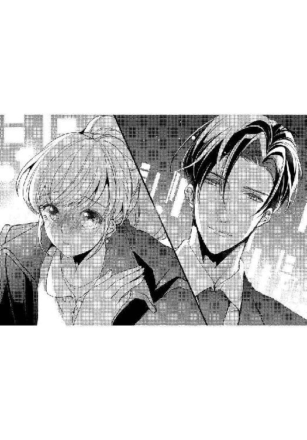
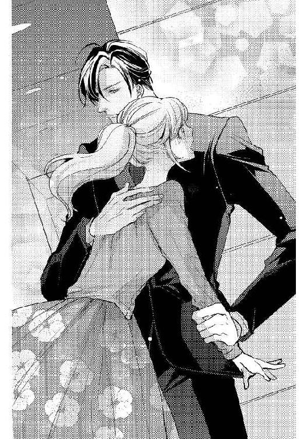
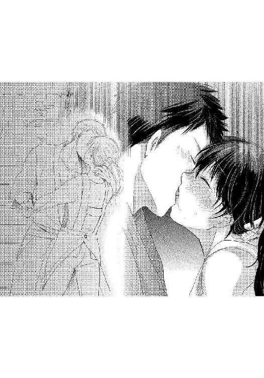

| 【一文字鈴短編集1】空回り女子はオオカミ上司の餌食【イラスト入り】 (無敵恋愛S*girl) | |
| 一文字鈴 | |
| 株式会社 ぶんか社 (2017) | |
株式会社 ぶんか社
【一文字鈴短編集①】
空回り女子はオオカミ上司の餌食
一文字鈴・著
ｎｅｃｏ・イラスト
アヤコ・イラスト
結城アオ・イラスト
※本作品の内容はすべてフィクションです。
実在の人物・団体・事件などには一切関係ありません。
エレクトロニクス分野で県下最大のシェアを誇る園山産業のオフィス──。
その開発部のフロアで、二十三歳の朝霧美紀は売上表を手に、肩までのポニーテールを揺らして、おずおずと課長席の前に進み出た。
「あの、黒崎課長、売上表です」
資料を見ていた黒崎が不機嫌な表情で顔を上げ、チラリと壁にかかった時計を見た。
「やっとできたか。ずいぶんと時間がかかったようだが、寝ていたのか？」
あからさまに嫌味を言われて、書類を提出しようとしていた美紀の肩がピクリと揺れる。
「遅くなって、すみませんでした」
ぺこりと頭を下げる美紀を一瞥して、目の前に座っているオーダーメイドのダークスーツを完璧に着こなした美形の男はため息を吐いた。
「まあいい、書類を見せてみろ」
「は、はい......」
緊張しながら売上表を手渡すと、彼は鋭い眼差しで書類に目を通し、小さく頷いた。
「わかりやすくまとまっている。いいだろう」
（よかった）
ほっとして笑顔になった美紀を見つめて、黒崎が低い声で続けた。
「それで、以前頼んでおいたプレゼン用の資料はどうなっている？」
「資料？ あ......」
途中までしかできていないことを思い出し、美紀はかすれた声で答える。
「あの、もう少し......」
「なんだと？」
黒崎の整った顔に、深い縦皺が刻まれる。美紀はこくりと喉を鳴らし、一歩後ずさった。
「すみません。えっと、二日もあれば終わりますので......」
「朝霧の脳は鳥レベルか。資料作りに二日もかけてどうする。いいか、今日の定時までにすべて作成しろ。わかったな」
「え......」
「え、じゃねぇよ。定時まであと二時間ある。十分だろう」
黒崎の剣幕に美紀は目を丸くして、改めて目の前の男を見つめた。
黒崎賢二、二十九歳。開発部営業課長で、最年少で課長に就任した我が社きってのエリートだ。日本人離れした百九十センチ近くある身長と、モデルのような端整な顔立ちから、社内外を問わず女性ファンが多い。美紀も初めて見た時、理知的な美貌とスーツ姿に心臓を射抜かれ、それから密かに彼に憧れていた。
「定時までだ。わかったな？」
「で、でも......」
「なんだ？ 言ってみろ」
美紀はなんとか締め切りをのばすように彼に詰め寄ろうとして、課長席に勢いよく体当たりしてしまう。ドンッと音がして机が揺れ、その拍子に置いてあった黒崎のマグカップからコーヒーがこぼれた。
「わざとか、朝霧！」
黒崎の目がクワッと見開かれる。
（ひぃっ、怖い）
「す、すみません」
「とにかく、プレゼンの資料を定時までに仕上げろ。いいな？」
これ以上彼に逆らう勇気など一ミリも持っていない美紀は頷くしかできなかった。
「......わかりました」
「それじゃあ、席に戻ってすぐに取りかかれ」
「......はい」
しゅんと肩を落として、美紀はとぼとぼと席に戻る。仲の良い女子社員の大森リサが心配そうに小声で話しかけてきた。
「美紀、また黒崎課長に叱られたの？」
「うん......」
課長から叱られる頻度が課内でダントツに多い美紀を気遣って、リサが励ますように言う。
「黒崎課長は仕事ができる人だから、スローペースな美紀が気に入らないのかもしれないけれど、叱ったり睨んだりするのはヒドイわー」
リサの言葉に驚いて顔を上げる。確かに仕事が遅い美紀は黒崎から叱られることが多いが、睨まれているなんてまったく知らなかった。
（黒崎課長が私を......）
チラリと課長席を見ると、書類を見ていた黒崎がちょうど顔を上げて美紀の方を見た。目が合った瞬間、黒崎にギロリと睨みつけられ、美紀は動揺する。
（何もしていないのに、睨まれた......）
隣にいたリサが黒崎の視線に気づいて唇をとがらせた。
「また美紀を睨んでいる。いくらイケメンでも、私の親友をこれ以上いじめたら許さないんだから。ドンマイ、美紀」
（もしかして......ううん、もしかしなくても、私は黒崎課長から嫌われているの？）
そう認識せざるを得ない状況に、ズキンと美紀の胸がうずき、ヒリヒリと焼けつくように痛む。
「美紀、顔色が悪いよ。大丈夫？」
「うん、大丈夫よ」
小さく笑った美紀を見て、リサはポケットの中からスマホを取り出して、弾んだ声を出した。
「そうだ、美紀、聞いてー。今夜、取引先の男性と部内の女子社員とで合コンがあるらしいの。女の子の人数が足りないから来てほしいって。美紀も一緒に行こうよ」
合コンが大好きなリサの誘いに、美紀は小さく笑って首を横に振る。
「ごめんね、私は遠慮しておくわ」
「恋人をみつけるチャンスなのに、どうして行かないの？ ねえ美紀、一緒に行ってよ！お願いだからー」
リサの必死な表情に、合コンはあまり好きではなく、むしろ苦手な美紀は頬を引きつらせた。
「あの、私、用があって」
「合コンよりも大切な用があるの？ あっ、もしかして美紀、彼氏ができたの？」
「......」
（合コンを断る理由が思い浮かばないから......リサちゃん、嘘をついてごめんね）
美紀は心の中で詫び、小さく頷いた。
「そ、そうなの。彼氏がいるから、合コンには行けない。ごめんね」
「んまぁ！ そうだったの。美紀は可愛いから、彼氏ができるだろうと思っていたけれど、本当にうらやましい。社内の人？ あぁ、私もイケメンの彼氏がほしいわー」
リサが叫んだ直後、鋭い声が響いた。
「朝霧！ 無駄話をしていないで、さっさと仕事をしろ」
「は、はいっ」
美紀だけが名指しで叱られてしまった。
（やっぱり私、黒崎課長によく思われていないんだ......）
しゅんと肩を落とす美紀に、リサが申し訳なさそうに謝った。
「ごめんね、美紀......」
「平気、気にしてないよ。頑張ってきてね」
「えへっ、素敵な男をゲットしてくるー。定時で仕事が終わるように頑張るぞー」
Ｖサインをして自席へ戻っていくリサの後ろ姿を見送り、美紀は途中までできているプレゼン用の資料を見つめた。
（定時までに仕上げなくては。頑張れ、頑張れ、私......）
ペシペシと自分の頬を両手で叩いた美紀は、机の上のノートパソコンを立ち上げ、カタカタとテンプレートにデーターを打ち込んでいく。エクセルは苦手なので、なかなか進まない。
営業に出ていた社員が戻り、フロア全体が賑やかになった。
「──朝霧」
名を呼ばれて、あわてて振り返ると、黒崎が不機嫌そうな顔で仁王立ちしていた。
まだ資料作りが終わっていない美紀は動揺する。
「仕事はどこまで進んだ？」
「あの、えっと」
口ごもっていると、皮肉にもフロア全体に定時を知らせる電子音が響いた。
胸の前で腕を組んだ黒崎が鋭い眼差しを向ける。
「朝霧、俺は定時までに済ませろと言ったはずだが？」
「で、ですよね。本当にすみません。残業して今日中に仕上げますので......」
「何が残っているんだ？」
美紀は机の上とパソコンを交互に見つめて、恐る恐る答える。
「あと、表と脚注を作成するだけです。でも、先月の収支データが見当たらなくて......」
ゴンッと大きな音がした。黒崎が机を蹴った音だ。美紀の身体がぴくりと揺れる。
「バカ！ なぜ、上司の俺にすぐに相談しない？ まったくお前は」
「あ、あの......これからすぐに資料室へ行って......」
黒崎は片手を上げて美紀を制した。
「それでは時間がかかりすぎる。直接データを送ってもらった方がいい。電話を借りるぞ」
黒崎はすっと手を伸ばして、美紀の机の上にある電話の内線ボタンを押し、受話器を取り上げた。
「企画部の沢村主任を──ああ、沢村か。俺だ──誰がオレオレ詐欺だ！ 開発部の黒崎だ。頼みがある。先月の収支データをメールで送ってほしい。そうだ、急いでくれ」
手際よく話をつけた黒崎が受話器を置き、美紀を見た。
「データが届いたら、すぐにお前のフォルダに転送する」
資料室へ探しに行くとなると、小一時間ほどかかるところだった。
「あ、ありがとうございます」
「他に困っていることはないか？ 何かあれば遠慮せずに俺に言え」
黒崎の口調は相変わらずだが、眼差しは穏やかで、美紀は少しの間ぼぅっと彼を見つめていた。
「い、いいえ......」
「それじゃあ、資料作りを今日中に頼むぞ」
「は、はい」
踵を返して黒崎が課長席に戻ると、美紀は大きく息を吸った。
（よしっ、仕事を頑張る！）
美紀はパソコンの画面を見ながら、カタカタと資料作成に取りかかった。
仕事が早い黒崎が、さっそく先月の収支データをメールで送ってくれたので助かった。
三十分ほどで資料の表が完成し、あとは脚注だけになる。
（もう少し......ふぅ、ちょっと休憩してこよう）
喉が乾いた美紀は、半分以上灯りが消えたフロアを出て、給湯室に向かった。
誰もいない室内はひんやりと空気が冷えている。照明と暖房を入れて、手早くコーヒーを淹れていると、渋川課長が入ってきた。
セクハラ課長という、すごいあだ名がついている渋川課長は、妻子がいるのに、あちこちの女子社員をくどいている四十五歳の男性だ。
無視するわけにいかずに、美紀は会釈をした。
「渋川課長、お疲れさまです」
「開発部の朝霧さんか......」
にっこりと笑った渋川課長がつかつかと近づいてきた。
「今度、二人で食事に行かない？ 君のような可愛い子にピッタリのお店があるんだよ」
顔を近づけられて、ゾワッと鳥肌が立ち、身体を強張らせた。
「......せっかくですが、忙しくて......」
「冷たいねぇ、課長が誘っているのに、そんな断り方をしていいと思っているの？」
いきなり強く腕を掴まれて悲鳴をのみ込む。
（た、助けて──）
心の中で叫んだ瞬間、鋭い声が給湯室に響いた。
「渋川課長、俺の部下に何をしているんですか？」
ドアを開けた黒崎が怒りをあらわに仁王立ちしているのを見て、渋川課長がビクンと肩を揺らした。
「く、黒崎課長......いや、違うんだ。朝霧さんと僕は」
「──その手を離せ」
すごむような低い声に、ぎょっと目を見開いた渋川課長が、あわてて美紀の手を放した。
「少し話をしていただけだよ。それじゃあ」
すごすごと給湯室から立ち去る渋川課長を一瞥し、黒崎が美紀の方を向いた。表情はまだ険しいままだ。
「あの、ありがとうござ......」
「ボサッとするな、このバカ！」
黒崎の剣幕にお礼の言葉が途中で止まってしまう。
相変わらず口は悪いが、それでも彼が心配してくれていることを感じて、美紀は頭を下げる。
「ああいう時は大きな声を出せ。渋川課長は小心者だから、すぐに逃げ出すはずだ。間違っても誘いに乗るなよ」
（黒崎課長はすごく厳しいけれど、頑張っているところはちゃんと見てくれるし、困った時には親身になって助けてくれる......）
外見の良さだけでなく、内面も尊敬できる人だ。
（でも、私は黒崎課長から嫌われているから......）
改めて自覚した途端、胸がズキンと痛み、美紀は盛大にため息をついた。
定時を一時間半ほど過ぎると、開発部のフロアはさらに閑散としてきた。
美紀はまとめのページの脚注を打ち込みながら、苦手なグラフに手間取っていた。
（えっと......あれ、合計値が違うのはどうしてだろう）
データを入れ間違えてないか確認していると、黒崎が課長席から立ち上がった。
「朝霧、どうした？ 何を困っているんだ」
「黒崎課長......」
彼は美紀のすぐ後ろに立つと、パソコンの画面をじっと見つめた。
黒崎がそばにきただけで、心臓がドクドクと早鐘を打ちつけてしまう。
「デ、データを入力したのですが、数字がおかしくて」
「見せてみろ」
席を立ち上がろうと腰を浮かしかけた瞬間、黒崎が腕を伸ばし、後ろから抱きしめるようにしてパソコンのマウスを握った。
「ふぁ......っ」
思わず変な声が出て、顔が熱くなる。
身体が密着し、背中越しに彼の温もりを感じて、頭の中が真っ白になってしまう。
耳元で低い声が聞こえた。
「表の数値がおかしいようだな」
キーボードを叩く彼の指先の素早い動きをぼぅっと見つめ、そっと彼の横顔に視線をうつした。
パソコンの画面を見つめたまま、彼は無造作に前髪を掻き上げ、小さく息を吐く。
はらりと落ちた前髪と切れ長の瞳から目が離せず、高鳴る鼓動が彼に聞こえないかと不安になるほどドキドキしていた。
（し、仕事中なのに、黒崎課長がそばにいるだけで胸が苦しくて息ができない......）
「このデータか」
さらに強く後ろから美紀を抱き締めるようにして、彼は片手でキーボードを叩き、もう片方でマウスを操作する。
近すぎる距離に身体を強張らせていると、いきなり名前を呼ばれた。
「朝霧」
「は、はい」
反射的に振り向いた瞬間、彼の顔がすぐ近くにあって驚いた。
勢いがついていたので途中で止まらず、気づいた時には美紀の唇にやわらかな感触が触れていた。
少しして、それが彼の頬だと気づく。
「！」
偶然とはいえ、黒崎の頬にキスをした美紀は大きく目を見開いて息をのむ。心臓が壊れそうなほどバクバクと大きく脈打ち、あわてて口を開いた。
「......あ、ち、ちがうんです。ふっ、振り返ろうと......わ、私......す、すみません......」
動揺しすぎて、何を言えばいいのかわからず、がばっと頭を下げる。次の瞬間、鈍い音がして、すぐそばに座っている黒崎の顔面を頭突きしていた。
「痛......っ」
石頭なのか、美紀の方は全然痛くなかったが頭突きされた彼は顔を右手で覆っている。
「す、すみません。あの......」
「大丈夫だ。それより、騒ぐと周囲に気づかれる」
おそるおそる周囲を見渡すと、定時から時間が経っているので、開発部のフロアは社員が少なく、誰も気づいていないのが不幸中の幸いだった。
（わ、私ったら。黒崎課長の頬に、キ、キスしただけでなく、頭突きしてしまうなんて、本当にあり得ない。こんなドジだから嫌われるのかな......）
そんなことを考えていると、黒崎はもうパソコンの画面をじっと見つめていた。
ふいに机上に置いてあった美紀のマナーモードにしてあるスマホが小さく震えた。
ちらりと画面を見ると、リサからのメールだった。仕事中なのでそのままにしておくと、パソコンの画面を見つめたまま、黒崎が低い声で尋ねてきた。
「──出なくていいのか？」
「は、はい。友達からのメールです。後で大丈夫なので」
「そうか」
それ以上、彼は何も言わずに小さく息をつき、美紀を見た。どうやら金額が合致したようだ。
「朝霧、数式を間違えていたぞ。それも二か所だ。こんなミスをするなんて珍しいな」
普段はミスが少ない美紀だが、給湯室から戻ってから、仕事に集中できずにいた。
「すみませんでした」
「彼氏のことでも、考えていたんだろう」
「え......？」
美紀は大きく目を見開いて黒崎を見つめる。先ほどリサと話したことを彼に聞かれていたことに気づき、誤解を解こうと思ったけれど、合コンに行きたくないから嘘を言ったと説明しても信じてもらえるかどうかわからない。それに彼から頻繁に嘘をつく人間だと思われたくなくて、美紀は唇を噛みしめた。
彼は睨むような眼差しを向けたまま低い声を出す。
「どうせさっきのメールもその男からだろう。男と遊ぶ時間はあるのに、仕事をする時間はないのか。もっと真剣に仕事をしたらどうだ」
冷やかな彼の声に、頭上から冷水を浴びたような衝撃を受け、美紀の目にじわりと涙が浮かぶ。
泣かないように手をぎゅっと強く握りしめる。
「本当に、すみませんでした」
「もういい」
「......」
「それが終わったら、共有ファイルに保存しておいてくれ」
「は、はい」
すっと立ち上がり、彼は課長席に戻ると、ボールペンを持って資料に視線を落とした。
美紀はあわててパソコンに視線を戻し、まとめのページを打ち込んでいくが、パソコンを操作する手が小刻みに震えていた。
（集中して頑張らないと。これ以上嫌われたくない......）
胸がズキズキと痛む。黒崎の方を見ないようにして打ち込んでいくと、ようやく脚注が完成した。
ほっとして息をつき、共有フォルダの中に保存して、パソコンを閉じ、机の上を片付ける。
「朝霧、終わったのか？ 遅くまでご苦労だったな」
黒崎の声に、肩をビクンと震わせて振り返る。
「は、はいっ。あの、手伝ってくださって、ありがとうございました」
彼の目を見ることができずに、バッグを持ってドアに向かうと、背後から鋭い声が聞こえた。
「待て。朝霧は駅まで歩きだったな。外はもう真っ暗だぞ。俺が駅まで送って行く」
「で、でも......悪いですし......」
「遠慮しなくていい。俺の仕事も終わったところだ。デスクを片付けるから少し待っていろ」
有無を言わせない口調に、美紀は仕方なく頷いた。
いくら憧れている相手でも、先ほどこっぴどく叱られたばかりで、これから二人きりで夜道を歩くと思うと胃が痛い。
彼は素早くデスクを片付けて声をかける。
「朝霧、行くぞ」
「あ、はい......」
あわてて黒崎の後について会社の玄関を出ると、周囲はすっかり日が落ち、オフィス街のネオンと行き交う車のライトがまぶしく、冷たい風が吹きつけた。
ブラウスの上にカーディガンという薄着な服装を悔いながら歩いていると、黒崎が驚いた表情で足を止めた。
「薄着だな。これでも着ていろ」
すっとスーツの上に着ている黒のトレンチコートを脱いで、バサッと美紀に羽織らせる。
「あっ、あの、でも」
「俺は大丈夫だから、そのままお前が着ていろ。悪かったな、急に残業させて」
美紀は驚いて首を小さく横に振った。
「いいえ、残業になったのは、仕事が終わらなかった自分のせいなので」
黒崎は小さく首を横に振った。
「それから......少し言い過ぎたと思っている」
「......いいえ」
（やっぱり、優しい人だ。嫌いな私にもちゃんと謝ってくれるし、こうして送ってくれて）
彼が気にしていると知り、胸がじわりと熱くなった。
大きすぎてぶかぶかのトレンチコートの前を押さえながら、黒崎と並んで歩いて行く。
冷たい風が頬に当たり、息が苦しい。ふいに黒崎が漆黒の夜空を見上げてつぶやいた。
「きれいだな。こんなにはっきりと星が見えるのは珍しい」
美紀も上を向いた。降ってくるように星が瞬いている。
「本当にきれいですね。空から星が落ちてきそうです」
立ち止まったまま、二人で吸い込まれそうに美しい夜空を見上げていると、夢の中に入るような気持ちになる。ふいに黒崎の低い声が響いた。
「朝霧は、エクセルが苦手だったな」
「あ、はい。すみません、仕事が遅くて。それにドジが多くて」
叱られるのだろうと思っていると、彼はすっと美紀を見て、優しく目を細めた。
「提出は遅いが、お前は丁寧な仕事をするし、書類はよくまとまっている。苦手なエクセルもちゃんと使えるようになっているし、よくやってくれていると思う」
優しくなった彼の口調に、美紀は信じられない思いで彼を見つめた。
（私が褒められている？ もしかして、それほど嫌われていないのかもしれない）
そう思うと、じわじわとうれしさが込み上げ、頬がゆるむ。
「お前は優秀な部下だ。もっと自信を持っていいぞ」
そう言うと彼は歩き出した。
「は、はい......」
（本当に、夢みたい......）

ふわりと気持ちが舞い上がり、歩きながら、チラリと隣を見る。穏やかな漆黒の瞳に、胸がきゅん、と締め付けられた。
角を曲がると大通りから駅前が見えてきた。
（もう少し、二人で歩いていたかった）
そんな気持ちになると同時に、仕事を手伝ってもらったお礼に黒崎を食事に誘ってみてはどうか、とふと美紀は思いついた。
褒められたとはいえ、あまりよく思われていないのに誘っても無駄だろうというあきらめの気持ちと、二人きりのこんな機会はめったにないという切迫した気持ちで美紀はあせりはじめる。
駅前の大きな交差点で信号待ちにかかった。
（い、今だわ。勇気を出して黒崎課長を食事に......）
美紀は唇を噛みしめて黒崎に話しかけた。
「あのっ......黒崎課長」
「なんだ？」
美紀の心臓がドクドクと早鐘を打ちつける。
「も、もし、よかったらっ......」
「うん？」
「わ、私と......しょっ、しょっ、食事を......」
言いかけた瞬間、背後から女性の声が聞こえた。
「賢二？ こんなところで会うなんて、偶然ね」
信号待ちの人々の中から、きれいな女性が近づいてきた。
（よ、呼び捨て......？ あっ、この人見たことがある。確か同じ会社の......）
美紀はハッとして彼女を見つめた。すぐに彼女が美人な上に仕事もできると噂の秘書課主任、工藤麗子だと思い出す。
「麗子......ひとりか？」
黒崎が、女性を下の名前で呼び捨てにするのを初めて聞いて、美紀は目を丸くした。ドクドクと胸が嫌な音を立てる。
「仕事が早く終わったから、駅前でショッピングをしていたの。賢二は？」
ブランド名の入ったバッグを掲げて麗子が微笑むと、黒崎も小さく笑った。
「俺は部下を駅まで送ってきた。ちょうどよかった。麗子に少し話があったんだ。この後、時間はあるか？」
「ええ、大丈夫よ。でも──」
麗子が、ちらりと美紀の方を見た。黒崎が咳払いして低い声を出す。
「悪いな、朝霧。ここでいいか？」
エレベーターを上がれば、もう駅の構内だ。
「あっ、はい。ありがとうございました。あのコート......」
あわてて羽織っていた大きなトレンチコートを脱ぐ。その直後、夜風が身体を吹き抜けて、美紀の全身をひやりとした冷たいものが包み込んだ。
彼は手渡したコートにすっと腕を通すと、小さく微笑んだ。
「お疲れ、じゃあな、朝霧、気をつけて帰れよ」
「はい、失礼します」
黒崎と別れた後、ひとりでエレベーターの前まで歩くと、美紀はそっと後ろを振り返った。
（あ......黒崎課長、笑っている）
親しそうに麗子と話す黒崎を見て、美紀の胸がぎゅっと締めつけられた。
（この後、二人で食事に行くのかな。それとも......）
フルフルと首を横に振り、美紀は唇を噛みしめてエレベーターに乗ると、そのまま後ろを振り返らずに改札口を通り抜けた。
翌朝、美紀は駅からオフィスまで、寝不足の目をこすりながら歩いていた。
昨夜は、どうしても黒崎と麗子が楽しそうに話している姿が脳裏から離れず、今頃二人はどうしているのだろう、などと考えて眠れなかった。
（もう気にしない。黒崎課長と星空を見られただけで夢のようだった。仕事ぶりを褒めてもらえたし、もう十分。これ以上望むなんて......）
深呼吸をして開発部のフロアに入ると、美紀は明るく挨拶をして課長席の前に立った。
「黒崎課長、おはようございます。昨夜は駅まで送っていただき、ありがとうございました」
書類を見ていた黒崎が顔を上げた。
「朝霧か。おはよう──早速だが、昨日作った資料をＰＤＦにして、各部署にメールしてくれ」
昨夜のことには何も触れず、いつものように仕事の指示が飛ぶ。
「はい。すぐに送ります」
美紀は席に着いてパソコンを立ち上げ、ＰＤＦ化した資料をメールで送付していく。それが終わると会議用の資料をまとめようとファイルを手に取った。ふいにポンと肩に手が置かれ、振り返るとリサがにっこりと笑っていた。
「美紀、おはよう。朝から忙しそうね」
「おはよう、リサちゃん、昨夜の合コンはどうだった？」
「それがね、イイ男がひとりもいなかったのよー」
肩をすくめて、お手上げというポーズでリサがため息をつく。
「チャラチャラした遊び人と、オタクみたいな小太りの男しかいなくてガッカリ。会社で毎日、黒崎課長みたいなイケメンを見ているから目が肥えしまって大変よー。あ、そういえば、黒崎課長って恋人がいるらしいね。残念だわ」
リサの言葉に、美紀は目を大きく見開いた。
あれだけモテる人なので、むしろ恋人がいて当然だけど、特定の相手がいるという噂を聞いたことがなく、フリーなのだろうと思っていた。
「く、黒崎課長に、恋人がいるの？」
美紀は、自分でも驚くほど動揺していた。
リサは頷き、小声で囁く。
「合コンに来ていた女子社員のひとりが、ひと月くらい前に黒崎課長に告白したんですって。そしたら好きな人がいるからってハッキリ断られたらしいよ」
昨夜の麗子と楽しそうに話す黒崎の顔を思い出し、胸が針で刺されるようにチクチクと痛んだ。無意識のうちに美紀は胸を押さえる。
「美紀？ 顔色が悪いよ」
「だ、大丈夫よ。さあ、仕事を頑張らないと」
「うん、また後でね」
美紀はひとりになると、そっと唇を噛みしめた。黒崎に恋人がいたという事実が胸を貫き、苦しくてたまらない。
そもそも昨夜のことだって、彼は上司としての立場から駅まで送り、仕事に関して褒めてくれただけなのに、舞い上がって食事に誘おうと考えていた自分がなんだか滑稽だ。
（それでも、私は黒崎課長のことが好き......）
彼には恋人が、麗子さんがいる。あきらめなければいけないのに、彼を思う気持ちは行き場を失ったまま、心の中でさらに大きくなってしまう。
もし許されるなら、好かれていなくてもいいので、彼にひとことだけでいいから気持ちを打ち明けておきたかったという思いが湧き上がり、あわてて否定する。
（ううん、今さらそんなことをしても、仕事で毎日接する黒崎課長を困らせるだけだし、麗子さんにも悪いから......）
黒崎と麗子なら、二人とも仕事ができるし、美男美女でお似合いだ。
美紀はぎゅっと目を閉じて首を小さく横に振り気持ちを切り替えると、深呼吸をして仕事に取りかかった。
苦手なエクセルで作成する書類に集中していると、あっという間に定時になる。
周囲の社員たちが帰宅の準備をはじめ、仕事を終えたリサが小走りに走ってきた。
「美紀、これから私、別の合コンに誘われているの。今度こそイイ男をゲットしてくるわー。美紀も帰れそう？」
「私も、あとファイルを返すだけで仕事は終わりよ。楽しんできて」
「ありがとう、じゃあ、またね」
リサが弾んだ足取りでフロアを出ていくのを見送って、書類を片付ける。
そっと課長席を見ると、空席だった。美紀は息をつき、ファイルを両手に抱えてフロアを出る。
階段を下りて書庫の前までくると、他の社員がいるのか、入口のドアが少し開いて灯りが漏れていた。
「失礼します」
ドアを背で押し開けながら書庫に入った美紀は、思わず息をのんだ。
「あ......」
書庫にいたのは、黒崎と麗子だった。
しかも抱き合うようにして、黒崎の身体に麗子がしがみついている。
目を見開いた美紀は驚きのあまり持っていたファイルを落とした。ものすごい音と共に持っていたファイルが床に散らかる。
ハッとした麗子が黒崎から離れて、恥ずかしそうにうつむき、黒崎は驚いて表情を強張らせながら美紀を見つめている。
呼吸を忘れていた美紀は、ようやく息を吸い込み、かすれた声を出した。
「......す、すみません」
震える手でファイルを拾って棚に戻すと、美紀はそのまま二人の方を見ないようにして、足早にドアへ急いだ。頭の中は真っ白だった。
「朝霧、待て！」
「......っ」
黒崎の声に応える前に、美紀は駆け出していた。
「朝霧！」
黒崎の呼び声が背後で聞こえたが、振り返らずに書庫を出る。廊下を曲がろうとして、すぐに後ろから腕を掴まれた。
「待ってくれ」
足を止めた美紀は、身体を強張らせて振り返った。
「......手を離してください」
視線を大きく揺らす美紀を見て、黒崎は男らしい口元を引き結んだ。
「誤解だ、朝霧」
「す、少し驚いただけです。逃げ出してすみません。あの、麗子さんが待っていると思いますので、戻ってあげてください」
「麗子はただの友人なんだ。俺達は同期だ」
「......」
「朝霧、麗子とは本当に何でもないんだ」
黒崎の声に美紀はぐっと拳を握りしめて顔を上げた。
「だっ、抱き合っていたじゃないですか。それなのにただの友人だなんて、麗子さんが気の毒です」
「違う。脚立から落ちそうになったから支えたんだ」
「え......？」
「少し前にフロアを出て書庫に書類を探しに行った。麗子も仕事で探し物をしていて、書庫の上の方にあるファイルを取ろうとしていた。書庫の中央に脚立が立っていただろう？」
「脚立......」
美紀は先ほど書庫で見た記憶をたどる。そういえば、二人の横に大きな脚立が立っていたことを思い出す。
「脚立から降りる時に、バランスを崩して落ちそうになった麗子を、俺が支えた。そのタイミングでお前が入ってきた」
「......でも......」
唇を噛みしめてうつむくと、彼は掴んでいる腕の力を強めた。
「は、放してください」
動揺する美紀をじっと見つめたまま、黒崎が真摯な表情でたずねた。
「聞きたいことがある。お前は恋人がいると以前、大森と話していた。この会社の人間だと。そいつは誰だ？」
「......え、それは......」
美紀の心臓がドクンと嫌な音を立てる。あの時ああいったのは、合コンに行きたくなかったからだ。
「どこの部署の誰なのか知りたい。教えてくれ、朝霧」
なぜ彼がそんなことを聞くのかわからず、美紀は途方に暮れる。そもそもあれは嘘なのだ。
「言いたくありません......」
「朝霧！」
「......っ」
黒崎の剣幕に驚いた美紀は、思わずかすれた声で答えていた。
「う、嘘なんです......」
「嘘？」
形のよい眉をしかめて、黒崎は美紀をじっと見つめる。
美紀はうつむきながら正直に答えた。
「合コンに行きたくなかったので、彼氏がいると言って断ったんです」
「──そうか、お前が嘘をつくとは思わなかった」
黒崎がめずらしく上ずった声を出すのを聞いて、美紀の目頭がじわりと熱くなり、涙が浮かぶ。
「すみませんでした」
美紀は彼の一瞬の隙を突き、彼の手を振り払うと、その場から駆け出していた。
「朝霧......！」
動揺している黒崎の声が聞こえたが、美紀は立ち止まらずに廊下を走り、階段を駆け上がろうとする。
「待てと言っているだろう！」
強く腕を掴まれ、強引に振り向かされる。美紀の表情が強張った。
「やっ、放して」
「朝霧......」
顔を上げられずにうつむいている美紀の頭に黒崎が優しく手を置いた。
「落ち着いてくれ」
「黒崎......課長......」
「──好きなんだ」
言葉の意味が理解できず、美紀は黒崎を見つめ返した。
「えっ......？」
彼は静かな口調で繰り返した。
「俺はお前のことが好きなんだ。お前が俺の部下になった頃からずっと好きだった。もう少しお前をいじめてから告白するつもりだった」
はっきりと告げられた言葉に、美紀は大きな瞳をさらに大きく見開いた。
「え......好き......？」
ふいに彼に強く腕を引っ張られ、美紀はバランスを崩して、たくましい彼の胸の中に倒れ込む。

「あ、あの......っ、い、今......」
「何度でも言う。俺はお前のことが好きだ。付き合ってほしい」
耳元でささやかれ、ぴくりと美紀の肩が揺れる。
「......う、嘘......」
「嘘じゃない。俺は本気だ」
黒崎は優しく微笑んだ。
「だっ、だって、課長、私のことを怒ってばかりで......」
「あわてたり困ったりするお前が可愛かった。見ているとどうしてもいじめたくなる」
「お、おかしいじゃないですか。ふ、普通は好きな子に、そんなことはしないのでは......」
彼は目を細めて美紀を見つめた。
「バカ、好きだからいじめたくなるんだ。叱ったり怒ったり、わざと顔を近づけて振り向かせたり、仕事を教えながら後ろから抱き締めたり、男なんてそんなものだ」
「......黒崎課長、ほ、本当に？」
唇を噛みしめた美紀が、不安そうな表情でじっと黒崎を見つめている。
「まだ納得していないようだな」
「だって......黒崎課長は麗子さんのことを好きなんだと......」
「違う」
彼はきっぱりと言い切った。
「でも、社内で二人のことが噂になっているし......それに」
「噂がどうでも、俺達はそんな関係じゃない。ただの友人だ」
「でも、呼び捨てにしているし、この前も駅前で親しそうに」
「口止めされているが、麗子は企画部の沢村と付き合っている。麗子と沢村と俺は三人とも同期なんだ。この前二人が喧嘩して、俺が手紙を届けたりメッセージを伝えたり、間に入って仲裁していた。だから本当にお前が気にかけるようなことは何もない」
黒崎は少し照れたような微笑みを浮かべて付け加える。
「お前は思っていることがすぐ顔に出る。麗子のことを気にしているとすぐにわかった。お前に嫉妬されるのはすごくうれしかった」
「......」
「どうしようもないくらいお前に惚れている。いつも一生懸命で、丁寧に仕事をするお前のことをずっと見てきた。俺が好きなのはお前一人だ。何度も言うが、麗子は同期でただの友人だ。信じてほしい」
言葉が出てこずに、美紀は彼の美貌をぼんやりと眺め、小さく頷いた。
「美紀......これから二人の時は、俺のことを名前で呼んでくれ」
「あのっ、黒崎課長......」
「賢二だ、美紀」
「け、賢二さん、あの、私......」
「美紀、お前のことが好きだ。俺と付き合ってくれ」
「......付き合う......？」
「返事は？」
「......」
夢の中にいるようで、頭の中がぼんやりとして、返事ができない。
「美紀？」
彼のかすれた声にハッと我に返った。彼の緊張した眼差しに気づき、美紀の胸がぎゅっと締めつけられる。
「わ、私......」
口を開いた瞬間、彼に対する熱い気持ちと共に、美紀の目から涙があふれ出た。
目を見張った彼が、あわてて美紀の背中をさする。
「なぜ泣く？ 返事を急がせ過ぎたのか？ すまない」
いつも余裕がある彼がうろたえる姿が愛しくて可愛い。美紀は思わず彼の背中に手を回して、たくましい身体にしがみついていた。
ピクリと大きく彼の身体が揺れる。
彼の胸に額をくっつけたまま、思い切って自分の気持ちを告げる。
「私、よく怒る黒崎課長のことを怖いと思っていました。きっと嫌われているんだろうと。でも......」
「──でも？」
「厳しいけれど、良いところを褒めてくれ、ダメなところを手伝ってくれる課長のことを、大好きになっていました」
気持ちを告げると同時に、美紀の頬に涙がこぼれ落ちた。
ぽろぽろと涙が伝う濡れた頬を、黒崎の指が拭うように優しく撫でる。
「よかった。お前に恋人がいたら、どんなことをしてでも、その男から奪うつもりだった」
俺様課長のつぶやきに美紀が顔を上げると、そっとあたたかな温もりが唇に触れた。
「......ん......っ」
ついばむような優しい口づけに、今まで感じたことのない甘いしびれが背中をせり上がってくる。
うなじに差し込まれた彼の指先が優しく髪を撫で、ゆっくりと唇が離れると、彼は低い声で囁いた。
「俺は嫉妬深いから、覚悟しておけよ」
「えっ、嫉妬って......？」
彼の美貌に穏やかな微笑みが浮かぶ。
「これから先、他の男のことなど考えられないくらい、お前の頭の中を俺でいっぱいにしてやる」
熱く囁かれて、トクンと大きく胸が跳ね上がる。
「仕事が終わったら、俺のマンションへ来てくれ」
美紀が唇を噛みしめて小さく頷くと、彼はほっとした表情で優しく美紀の肩を抱きしめた。
仕事が終わってデスク周りを片付けた美紀は、黒崎と一緒に会社を出た。彼の大きな手がそっと美紀の手に触れ、二人は手をつないだまま、ゆっくりと歩いていく。
彼は職場から近い高層マンションを見上げて言った。
「美紀、この八階が俺のマンションだ」
エントランスホールを通ってエレベーターに乗り八階に着くと、彼はそのまま美紀を部屋に招き入れる。
モノトーンのインテリアで統一されたおしゃれな室内はゆったりとした広さがある。
リビングに暖房を入れ、黒革の大きなソファーに座って二人でコーヒーを飲んでいると、視線を感じた。美紀が顔を上げると、彼が優しい笑みを浮かべて、じっとこちらを見つめていた。
「緊張しているようだな。俺といる時はもっとリラックスしてくれ」
「黒崎課長......」
「違うだろう？」
彼のあたたかい手が美紀の頬を撫でた。指先から伝わるあたたかさに、トクトクと心臓が音を立てて速まっていく。
「......賢二さん」
言い直すと、彼は小さく笑って、美紀を愛おしげに抱き寄せた。
たくましい彼の胸に頬が当たると速い鼓動が響いて、緊張しているのは自分だけではないことを知る。彼への愛しさが込み上げた。
「美紀、俺のことを好きだと、もう一度言ってくれ」
彼の指先が美紀の顎にかかり、すくい上げるようにして上を向かせる。星空よりも美しい漆黒の瞳に、美紀はこくりと喉を鳴らした。
「す......き......です......」
間近で熱く見つめられ、恥ずかしくて小声でつぶやく。
「そんな小さな声では聞こえない。もう一度言ってくれ」
「す、好きです」
彼の表情がうれしそうに輝き、ゆっくりと上体を倒して美紀に深く口づけた。
唇に伝わる熱とやわらかな感触に、ドクンと心臓が跳ね上がる。
彼は角度や動きに変化をもたせて口づけを深めながら、強引に舌を入れてきた。
「んっ......、ん──」
初めてのディープキスに戸惑う美紀の口内を、荒々しく彼の熱い舌が掻き回していく。
彼は舌を絡ませながら、ゆっくりと美紀の赤い頬を撫で、小さく笑って口づけを解いた。
「美紀、好きだ。こんなに強く惹かれたのはお前が初めてだ」
「......賢二...さん......」
耳朶を優しく口に含まれ、熱い舌で耳を舐め上げられて、心臓がドクドクと早鐘を打ちつけていく。
そのまま彼は軽々と美紀を抱き上げると、大幅なスライドで寝室へと歩いていく。
ベッドの上にそっと座らせると、美紀の肩を抱き寄せ、再び優しく唇を重ねた。
「あ......っ......んんっ......」
「美紀──」
溶けてしまいそうなキスが瞼や頬、首筋へ雨のように降り注ぎ、確かめるように押し付けられる彼の唇の熱さに、美紀の身体が熱くなる。
口づけが深まるほどに甘いしびれが大きくなり、美紀は呼吸さえも忘れて、大きく胸を上下させた。
「ん......っ、あ......っ」
いつの間にか、美紀のブラウスのボタンがすべて外され、スカートが床に落とされていた。
キャミソールを持ち上げるようにして脱がされそうになり、美紀は思わず彼の手を押さえる。
「あっ......、ま、待って......」
「待てない──もう止められない」
彼の声は上ずっていた。男らしい喉元が微かに震えている。
「お前のすべてが見たい」
耳元で囁かれ、鼓動がさらに速まり、心臓が破裂しそうになって身をよじる。
「あ......でも......」
「美紀、お前が欲しい」
かすれた彼の声を聞くと、身体の力が抜け落ちてしまう。彼の大きな手が優しく動き、身に着けているものをすべて奪われた。
「あ......」
じっと見つめられて、顔だけでなく、首や胸元までピンク色に染まる。
両手で胸を覆った美紀の手を彼が退けようとやんわりと掴んだ。
「隠さないでくれ」
「だって、恥ずかしいです......み、見ないで......」
「お前の身体はきれいだ。全部見たい。いや、俺のものにしたい。お前が欲しいんだ」
濡れた声で囁く彼の声も表情も甘く、美紀の身体の奥がジンとうずいてしまう。
「俺もすぐに脱ぐ。だから、そんなに困った顔をしないでくれ」
ワイシャツのボタンを外し、素早く服を脱いだ彼は、静かに床に衣類を落とした。
ベッドライトのやわらかなオレンジ色の灯りに照らされ、彼のたくましい身体が見える。
その均整の取れた男らしい身体を前にして、美紀はどうしていいのかわからず、目のやり場に困ってしまう。
彼は瞳を細めて小さく笑った。
「美紀、愛しているよ」
熱い囁きと共に、彼の引き締まった逞しい身体が美紀の上に覆いかぶさってくる。
「──っ」
正面から重なるように抱きしめられて、触れ合った肌が燃えるように熱くなる。
彼の胸から感じる鼓動は、美紀と同じくらい速かった。
「あっ、あの......賢二さ......っ」
彼の手が美紀の胸を掴むように触れた。その瞬間、ピクンと身体が跳ねる。
「やっ......あ、あの......っ」
彼は大きな手で、乳房を揉みほぐしていく。
指先で乳首を擦りつけられ、爪を立てるようにして、こねまわされた。
痛いのに、敏感な突起を愛撫されて、甘いしびれが迫上がる。
「ぁあっ......んぅ......っ......」
敏感になっている乳房を口に含まれて、美紀は思わず背を反らせた。
固くなった乳首に、彼のやわらかな舌と唇が強く絡みつく。
熱い舌が淫らな音を立てて乳首に吸い付き、転がすように甘くしごかれると、その貪るような舌の動きに、全身がかっと燃えるように熱くなった。
ちゅっと音を立てて乳首を離した彼は美紀の身体を優しく撫でながら、下半身にそっと触れた。
「ぁあっ......だ、ダメ......っ」
すでに潤んでいる蜜口に触れられた途端、美紀の身体がビクンと揺れた。
「大丈夫だ、俺に任せろ、美紀」
安心させるような優しいキスと共に、すべるようにして彼の長い指が蜜口を上下に動いていく。
「んんっ......あ、あ、あっ」
「身体の力を抜いてくれ。息を吐いて──」
言われた通り、美紀は息を吐き、強張っていた身体の力を抜く。
その直後、蜜口に指をつきたてられ、ビクッと全身が震えた。彼はそのまま、ぐっと指をくぐりこませてくる。
「......あ、ぁあっ」
強い異物感に美紀の身体が強張り目を閉じる。
「美紀、目を開けて俺を見ろ」
「んんっ、あ......賢二......さ......っ」
密口でゆっくりと抜き差しを繰り返されて、美紀は初めて感じる甘い痛みに小さく首を横に振った。
ぴちゃぴちゃと音が響き、彼は指の付け根まで深く埋めながら、中を愛撫していく。
「はぁっ、あ、あっ、うぅっ......」
「すごく濡れている。二本でも大丈夫のようだな」
意味を理解する前に、つぷりと美紀の中を掻き回す彼の指が二本に増えた。美紀は甘く押し広げられる蜜口の痛みに身をよじる。
「あッ、あッ......んんっ」
そのまま強引に指の根元まで押し沈められて、美紀の腰が跳ね上がる。
二本の指が中でうねるように動き、蜜道をこすり上げられ、呼吸さえままならない状態で声を出す。
「ひぅ......んんっ、やっ、ダ、ダメです。あっ、そこ......っ」
「ここがいいのか。中がヒクついて俺の指を締めつけている」
仕置きでもするように、最も感じやすいところをえぐるように指で掻き回されて、その力強い刺激にグチュッ、ズチュッと大きな水音が響いた。
「やぁっ......！ はぁっ、はぁっ......んんぅ......」
「お前は本当に可愛い──」
熱を帯びた声が聞こえ、頬と唇についばむような優しいキスが落とされる。
「お前がほしい。美紀」
彼がもどかしげに囁いた。
「賢二......さ......ん......」
「お前は俺だけのものだ。絶対に誰にも渡さない」
切れ長の瞳に鋭く光り、美紀の足首を掴んだ。
「あっ......」
「もうこれ以上待てない。美紀、俺を受け入れてくれ」
両足を抱えるようにして開くと、彼が上から覆いかぶさってきた。
大きく足を開かれ、蜜口に熱い彼の欲望があてがわれる。美紀が息を吸うのを見届けた彼がゆっくりと先端を中へと沈めてきた。
「んんっ......！ ああぁぁっ......あっ......あっ！」
強い圧迫感と共に、狭い蜜路を押し広げられる痛みに、美紀の背が反り返る。
美紀の目に涙が浮かんだ時、彼が動きを止めた。
「......そんなに痛いのか？」
いたわるような眼差しと共に、ベッドの上に広がる髪を彼にやさしく撫でられて、美紀はかすれた声で答えた。
「だ、大丈夫です......」
「美紀......」
彼の声が揺れて、瞳が細められる。大きな手で優しく美紀の髪を撫で、彼はそのまま浮かせた腰をゆっくりと蜜路に沈めた。
「あああっ！ くっ......け、賢二さ......」
「すまない。もう止められない。すぐによくなるはずだ。だからもう少し我慢してくれ」
低い声で囁くと、彼は腰を進めながら、熱い欲望の全てをのみ込ませていく。
「あぁ......っ、あふ......っ、はぁっ、はぁっ......」
「美紀──お前の中が熱く締まって......すごく気持ちいい」
ベッドが軽く軋んで、膣口に引きつるような痛みが走り、それが子宮全体に広がる。
「ンっ......！くぅ......あああっ......んっ！」
初めて男性の欲望を受け入れた衝撃に美紀の目に涙が浮かぶ。蜜路が膨れ上がった彼の欲望で埋め尽くされ、さらに彼は腰を打ちつけるようにして、自身の欲望を奥へと押し込んだ。
「ひぅ......っ、あ、あっ！」
脈打つ彼の欲望が、美紀の中をさらに硬さと大きさを増しながら押し広げていく。
ジンジンとしたうずきが全身を駆け巡り、彼の欲望が根元まで収まったのだとわかる。
「全部入ったよ。美紀、少しだけ、動いても大丈夫か？」
愛しげに見つめてくる彼と目が合い、こくりと小さく頷くと、彼は美紀の腰を掴んだ。
「身体の力を抜いてくれ」
「......んんぅ......っ、はぁっ、はぁっ......っ」
最奥まで押し広げられた欲望の先端が、グチュグチュと音を立てながら掻き回していく。
敏感で感じやすいところを太い亀頭にこすりつけられて、美紀はシーツを掴んだまま身体を震わせる。
「んあぁんっ！ んっ、あっ、あっ、賢二......さ......」
「ここが......いいのか......」
かすれた声で尋ねながら、彼は勢いよく欲望を引き抜いた。
美紀の腰を両手で押さえながら、一気に突き上げる。
「はぅ......っ！ あっ、ぁっ」
熱い涙のにじんだ瞳で彼を見上げると、彼の漆黒の瞳と目が合った。彼は抑えられないというように美紀を強く抱きしめ、深くつながった体勢のまま大きく腰を動かしていく。
「美紀......っ、美紀......」
「うぅ......！ あっ、あっ、あっ......！ んんぅ......」
美紀は彼の背中に手を回した。抱きついたまま身体を彼に預ける。
身体の表面からも内側からも彼の熱に溶かされて、痛みに強張っていた身体が少しずつほどけていく。
「お前の中が震えて......俺を包み込んでいる......美紀、好きだよ。愛している」
熱を帯びた彼の声とため息に、美紀の全身がさらにジンジンと痺れて、うわごとのようにつぶやいていた。
「......私も......好きです......大好き......っ、あぁっ、あ......」
「美紀──」
彼は目を細めて美紀を見つめ、さらに深くまで突き上げた。
固い亀頭がひわいな音を立て、こすり上げながら敏感な内側をグリグリと押し回されてしまう。
腰からせり上がってくる甘いしびれに、体温が上昇して息苦しくなり、美紀は目に涙を浮かべたまま懇願する。
「あぁっ......、も......、おかしく......なっちゃう......っ、あ、あぁ......っ......」
「理性なんか、俺はとっくになくなっている。おかしくなっても俺がついている。大丈夫だ」
彼の額には汗が浮かび、呼吸を乱しながら、強くこすり上げるように突き上げ、腰を押回す。
細腰を揺らして、抱えられた足を引きつらせながら、美紀は喘ぎ声を上げた。
「......っ、あ......ん、あ、あっ、あ......っ」
「美紀──」
中を貫く彼の欲望がさらに大きく膨らみ、荒い呼吸を繰り返しながら、彼は動きを速めた。
いっそう激しく腰を揺さぶられ、灼熱の欲望にズンズンと打ちつけられてしまい、もう何も考えられなくなった美紀は、夢中で彼にしがみついた。
「はぁ、はぁ......んく......、ん、んんっ......」
「美紀......俺の......美紀......愛している......」
かすれた声で囁かれ、固い欲望で中を激しく打ちつけられて、美紀は大きく背を仰け反らせた。
「......あっ、あああっ......！」
「──美紀......っ」
彼が強く腰を押しつけ、最奥でドクリと欲望を脈打たせた。その瞬間、白濁が注ぎ込まれる。
「あっ、あっ......んんっ......」
意識が飛んでしまうような浮遊感と共に、美紀の全身を電流のように強い快感が流れた。
初めて達した余韻に包まれて、美紀は身体を小さく震わせる。
荒く弾んだ呼吸を少しずつ整え、彼がぎゅっと美紀を抱きしめた。
「美紀......大丈夫か？」
そのまま抱き合って、身体をシーツに沈み込ませると、美紀は彼の胸に頬をつけた。
熱い体温に包まれながら目を閉じると、すぐに唇が塞がれる。ついばむような優しい口づけに、鼓動がトクトクと速くなった。
「好きです。賢二さん......私、すごく幸せ......」
あたたかな温もりに包まれてつぶやくと、彼の身体がピクリと揺れた。
「美紀──まだ俺を煽るのか」
彼の低い声に美紀は意味がわからず目を丸くする。
「え......？」
鋭い眼差しを向けられて思わず息をのむと、彼はぐっと唇を噛みしめた。
「ああ、ダメだ。お前が可愛すぎて、何度でも欲しくなる」
言い終わらないうちに耳を甘噛みされて、美紀は声を上げそうになった。
彼に吸われて数えきれないほどの赤い花が散っている美紀の身体は、先ほど達した余韻で驚くほど敏感になっている。さらに強く耳を噛まれて、美紀は真っ赤になって身をよじった。
「......っ、ぁ！ ま、待って......まだ......っ」
「お前の困っている顔は本当に可愛い。もう一度、俺を受け入れてくれ。頼む」
熱く囁いた直後、再び唇を塞がれる。
息苦しさから逃れようとする美紀を、彼は誰にも渡さないとばかりに強く抱きしめ、口づけを深めながら舌を挿入してきた。
彼の熱い舌が美紀の舌に絡みつき、巧みな舌使いで歯列の後ろをなぞられ、上顎をつつかれてしまう。
「......んぅ......っ、あぁ......っ」
「好きだよ、美紀。お前だけだ」
先ほど熱い飛沫を噴き上げたというのに、もう彼の欲望は凶器のような大きさと硬さを回復している。
雄々しく膨れ上がった欲望が密口に再びあてがわれ、逃れようとする美紀の上に覆いかぶさった彼が、ひどく感じやすくなっている蜜口に容赦なく欲望を突き入れた。
「ぅっ！ ん......っ、も、もう......ぁあっ......」
「美紀──」
すでに注がれた彼の白濁が、激しい彼の動きに掻き回され、結合部分からあふれ出した。太ももをぬるりと伝い落ちる感触に、美紀の全身が熱くなっていく。
「あ、あ、も......だ、ダメ......ああぁぁ......っ」
背中にシーツをこすりつけながら、美紀は彼の欲望をのみ込んでいく。
子宮口をこすり上げられて、美紀は目に涙を浮かべながら背を波打たせる。
腰が押し回され、甘いうずきが全身を駆け抜けると、もはや彼のことしか考えられなくなってしまう。
「や......ぁっ......んん、っ......」
背中を大きく反らせながら、美紀はピクピクと身体を揺らせた。息を乱した彼に奥深い場所を突かれ、揺すり上げられて、絶え間なく快感が弾ける。
「好きだよ、美紀。俺の全てでお前を愛している──」
「はぁっ......はぁっ......け、賢二......さ......、ぁあっ......」
彼の切ない声と表情に、美紀の胸の鼓動がさらに速まっていく。
（賢二さん......愛しています）
激しく愛されて身も心もとろけそうになった美紀は、甘い幸福感に包まれて目を閉じた。
「美紀、聞いてー、明日また合コンがあるの。今度こそ素敵な男をゲットするわー」
「うん、頑張って、リサちゃん」
昼食を終えた美紀は、リサと並んで社内の廊下を歩いていた。
「あっ、あの人よ。黒崎課長の恋人」
「いいなぁ、うらやましい！」
すれ違った女子社員の声に、リサが頬をゆるめる。
「ふふっ、今までフリーだったあの黒崎課長に恋人ができたから、みんな驚いているわー。睨んでいたんじゃなくて、見つめていたのね。あぁ、私もイケメンから睨まれたいわー」
美紀は社内では秘密にしておくつもりだったが、黒崎は公にしたかったようで、他の女子社員から告白された時に、「俺には朝霧という恋人がいる」と言い切ってしまい、社内に広まってしまったのだ。
「独占欲が強いタイプよね、黒崎課長って。それだけ愛されているのよ、あぁっ、私もイイ男がほしいわー。そういえば、秘書課の麗子さんって、企画部の沢村さんと付き合っているらしいし、どうして私には社内で声がかからないのかしら」
麗子と沢村は、社内では付き合っていることを秘密にしていたけれど、美紀と黒崎を見て隠すのをやめた。今では、四人でダブルデートをすることもある。
フロアに戻ると、課長席の黒崎が声をかけてきた。
「朝霧、会議の資料はどうなっている？」
「あ......」
「あ、じゃないだろう、まったく」
ため息をついた黒崎が、ファイルで美紀の頭をポカリと叩き、そっと顔を近づける。
「美紀、お前を叱っていいのは俺だけだ。今夜もお仕置きだな。俺のマンションへ来い」
耳元で囁かれて、美紀は頬を朱色に染めながら小さく頷いた。
彼女は今夜も、彼のマンションで身も心もとろけそうなほど溺愛され、熱く責め立てられるのだった──。
★おわり★
「わぁ、いいお天気！」
雲一つない青空を見上げて、中園美月は深呼吸した。
美月は自宅の一階を改装した小さな食堂『中園亭』を父と一緒に切り盛りしている。白いエプロンをつけて開店の準備をしていると、ふいに後ろから声をかけられた。
「......お店、開いていますか？」
低くて落ち着いた声が耳に心地良い。
「はーい、開いています。どうぞー」
元気よく答えて振り向くと、剣道着姿で長身の男性が穏やかな微笑みを浮かべて立っていた。
二十一歳の美月と同じくらい若い彼は見上げるほど背が高く、背筋がピンと伸びて和服がよく似合っている。その上彫りが深く整った顔立ちをして、美青年という言葉は彼のために作られたのではないかと思うくらいハッと目を引く外見をしていた。
「よかった。ランニングの途中でお腹が空いてしまって」
「あ......そう、ですか......」
明るい髪と同色の切れ長の瞳が陽射しを反射している。そんな彼がまぶしくて、美月は目を細めた。
男らしい首筋にくっきり喉仏が浮かんでいるのをぼぅっと見つめていると、美青年が小首を傾げた。
「剣道着がめずらしいですか？」
どくん、と胸が鳴った。見つめすぎたことに気づいて美月はあわてて言い訳をする。
「い、いいえ。剣道をしている幼馴染がいるので和服はめずらしくはないのですが、その、とてもよく似合っているので......凛々しくて、す、素敵だなぁと思って」
こんなことまで言うつもりはなかった。自分でも何を言っているのだろうと思い、頬が熱くなる。
「わ、私......あの、す、すみません」
そっと彼を見ると、一瞬、目を丸くして、いえ、と小さく首を横に振った。
「......ほめてくれて、ありがとう」
低い声でつぶやくように言って彼は軽く顔をふせた。少し照れたような彼の表情に、心臓が一気に駆け足になる。
「あ、の......ど、どうぞ中へ」
ぎくしゃくと小さな店のガラス扉を引くとカランコロンとベルが鳴り、厨房の父が「いらっしゃいませ」と声をかけた。
白色を基調とした店内は、四人掛けのテーブル席とカウンター席がある。両親がこの小さな食堂を始めたのは美月が三歳の時だった。優しく働き者だった母は二年前に病気で亡くなり、今は父と二人きりだ。
「お好きな席にどうぞ」
彼を見上げて声をかけると、迷うことなくカウンター席に座った。
対面式の厨房から、父が弾んだ声で美青年に話しかける。
「いやー、お客さん、すごい男前だねぇ。剣道王子みたいだ」
本人を前に恥ずかし気もなく剣道王子ときた。美月は小さく咳払いをして、水とメニューを彼の前に置く。
「メニューをどうぞ」
「えっと......何にしようか迷うな。お勧めってありますか」
「はい、一番人気は茄子の味噌炒め定食です。唐揚げ定食もボリュームがありますよ」
「おいしそうですね。でも、これから大学まで走って戻るので軽い物を──蒸し鶏のサラダをお願いします」
メニューから顔を上げて美青年が優しく微笑んだ。
（さわやかな笑顔......）
石像のように固まったまま、美月は彼を見つめる。
「了解、蒸し鶏のサラダね。美月、手伝って」
「はい、お父さん」
あわてて美月も厨房に入り、野菜を洗う。父は鶏肉をゆでながら、興味津々という感じで美青年に話しかけた。
「ところで、お客さんはどこの剣道部？」
「Ｋ大の剣道部です。主将をしている久賀悠馬と申します」
彼は椅子から背を離して頭を下げた。剣道をしているだけあって動作がキビキビして美しい。
（久賀、悠馬さん......）
美月は心の中で、彼の名前を繰り返してつぶやいた。
「Ｋ大剣道部の主将か、すごいなぁ。そうだ、久賀くんはＭ大の剣道部の松本亮介という子、知っている？」
「松本......？ ええ、知っています。試合で何度か当たりました。Ｍ大主将で、とても強いです」
「実はその子は友人の息子さんで、美月と仲がいいんですよ。なぁ」
調理台でおにぎりを握っていた美月が話を振られて驚いて顔を上げる。彼と目が合ってしまい、緊張して視線を泳がせると、彼は低い声で尋ねた。
「松本と知り合いなんですか？」
「ええ......父親同士が友達で同級生なので、小学生の時から知っています」
亮介は今でもよくお店に寄ってくれる仲のよい幼馴染だ。
「松本と同級生なら、僕も同い年だ」
「しっかりされているので、年上だと思いました」
「そんなことはないよ」
彼は少し照れたような表情で小さく微笑む。
（だから、その笑顔は反則です......）
トクトクと鼓動を速めている胸をそっと押さえて、深く息を吐く。父がゆで上がったチキンに味付けをすると、香ばしい匂いが店の中に広がった。
「それで、久賀くんは日曜日なのに今日も練習なのかい？」
「週末は自主練習なのですが、部員の三分の二以上が練習に出てきます」
「さすが強豪校だ。久賀くん、今度の春季大会も頑張ってね」
「はいっ」
彼は凛々しい表情で頷いた。
「く、久賀くん、お待たせしました」
さり気なく美月も名前を呼んでみた。蒸し鶏のサラダに小さなおにぎりを添えて彼の前に置く。
「あれ？ おにぎりはたのんでないけれど？」
「お、おにぎりはサービスです。ランニング中は炭水化物も一緒にとった方がいいし、少しなら胃の負担にはならないので」
悠馬が驚いたように顔を上げた。厨房の父も目を丸くしている。
「美月がそんな気の利いたことをするとは、驚いたなぁ」
「べっ、別に、気が利くも何も......」
「わかった、わかった」
父が満面の笑みを浮かべている。
赤くなった顔を彼に見られたくなくて美月はうつむいた。
「......ありがとう。君は優しいね」
いたわるような声が聞こえてそっと顔を上げると、彼は口元に優しい笑みを浮かべて美月を見つめていた。
「い、いいえ......」
彼はおにぎりを一口食べて、小さく何度も頷いた。
「このおにぎり、さっぱりしていてすごく美味しい。さすがプロの料理人だ」
「プ、プロって......私は昨年、調理師専門学校を出たばかりで、ようやく一年経った新米なので」
「ちゃんと家業のお店を継いで、すごいね」
「いえ、別に、そんな、ことは」
しどろもどろになる美月を見て、彼は目元を優しくゆるめた。
ふいに店の固定電話が鳴った。厨房の父が電話に出る。
「中園亭です──ああ、義姉さん......えっ、おふくろが？」
父の声が上ずっている。美月は小さく息をのんだ。
「......わかった、すぐに行きます」
電話を切ると父は青ざめた表情で美月の方を向いた。
「おばあちゃんが倒れたらしい。美月、父さんは車で様子を見にいってくる。少しの間、お店を頼んでいいか？」
「え、あ、うん......」
「すぐに戻ってくるからな」
父は調理着のまま足早に店から出て、駐車場の隅に停めてある自家用車に飛び乗った。
「おばあちゃんが......」
急な出来事に呆然となった美月は、カランコロンとベルが鳴る音でハッと我に返った。四十代の夫婦らしき男女が店内に入ってきて、テーブル席に座る。
「こんにちは」
「い、いらっしゃいませ......」
しっかりしなくてはいけない。そう思うのに、美月は不安で顔が強張るのを感じた。
「ご注文は──」
「えーっと、茄子の味噌炒め定食を二つ」
「は、はい──」
厨房に戻った美月は緊張していた。
この一年、いつも父がそばにいたが今はいない。何度も作ったことのあるメニューなのに、自分一人だと思うと体がぎくしゃくしてしまう。
（えっと、茄子を炒めて、付け合わせの煮物を準備して）
手順を考えながら歩いていると、調理台に置いてあったボウルに手が当たってしまった。ボウルが床に転がる大きな音に美月はビクリと肩を揺らした。
「あっ......す、すみません」
あわててボウルを拾い上げ、落ち着けと自分に言い聞かせる。
（さ、最初に何をするんだっけ......）
すっかり手順が頭の中から消えてしまっている。
（そうだ、野菜を洗わないと）
食材を取りにいこうとして足がもつれ、バランスを崩した美月は後ろに転倒しそうになった。
「きゃっ」
体が大きく傾くのを感じた瞬間、強い力で手を引かれた。後ろに倒れそうになっていた体が急に前に傾く。
「......大丈夫？」
思いがけず近くから声が聞こえた。駆け寄った悠馬が美月の腕を掴んで支えてくれたのだと気づく。
「あ......久賀くん......？」
「少し落ち着いて。深呼吸してごらん」
ポン、ポンと肩を叩かれて美月は小さく頷いた。言われた通り何度か深呼吸すると、すーっと頭の中の霧が晴れていく。
「──怪我はないようだね。僕も手伝うよ」
「でも、久賀くんはランニングの途中だし......」
「ちょっと待って」
彼はポケットから青色のカバーのスマートフォンを取り出した。
「──もしもし、少し遅れそうなんだ。みんなへの指示出しを頼む。すまない」
通話を終えると彼はにっこりと笑った。
「大丈夫だよ。調理は無理だけど、できることは何でも手伝うから、遠慮せずに言って」
「ほ、本当にいいんですか？」
「もちろんだ。困った時はお互い様だし、おにぎりをサービスしてくれたお礼も兼ねている。だから気にしないで」
彼は片目をつぶってみせた。ウインクだと気づいた瞬間、キュンと胸が強く締めつけられ、彼の優しい気持ちに胸の中がジンとあたたかなもので満たされていく。
「そ、それでは、じゃがいも六個、洗って皮を剥いてくれますか」
「わかった」
彼は手を石鹸で念入りに洗うと、流しに立ってじゃがいもを洗い、慣れない手つきで皮を剥きはじめる。今にも包丁がすべって手を切りそうだ。
（優しい人......）
美月はきゅっと唇を噛みしめ、彼を見つめた。
「──よし、できた。次は？」
「では、長ネギと玉ねぎを洗ってください」
「了解」
減農薬の野菜を直接仕入れているので、野菜はどれも土にまみれている。それでも彼は嫌な顔ひとつせず、調理台の上に置いてある野菜を冷たい水でざぶざぶと洗ってくれた。
慣れない台所作業を懸命に頑張る彼の整った横顔を見つめながら、美月の心臓はどんどん鼓動を速めていく。
（久賀くん、ありがとう......）
中華鍋で茄子を炒めながら、美月は心の中で感謝の言葉を繰り返した。
調理に集中すると、間もなく二品が完成した。
「お待たせしました。茄子の味噌炒め定食、二人前です」
味噌の香りが広がり、美味しいと喜んでいるお客さんを見て、美月の肩の力が抜けていく。
「一人でよく頑張ったね」
悠馬に声をかけられた瞬間、目の奥が熱くなった。
「ただいまー」
バタバタと父が帰ってきた。
「美月、一人にしてすまなかったなぁ、おばあちゃんはただのぎっくり腰だ。湿布して横になっている。義姉さんがついているから心配いらないよ」
「よかった......」
ようやくほっと安堵した美月は悠馬が店を手伝ってくれたことを父に話した。
「そうだったのか、久賀くん、本当にありがとう」
父は食事の代金はいらないと言ったが、彼は首を横に振った。
「少し手伝っただけですから気にしないでください」
食事を終えた悠馬が立ち上がると、美月は外へ出て彼を見送った。
「あの、ありがとう、久賀くん。助けてくれて。私......今回のことで自分がまだまだって気づけたの。もっと頑張らないといけないって。本当に、いろいろありがとう......」
どうしても彼を前にすると緊張してしまい、うまく話せない。
彼は茶色の瞳を大きく見開いて、すぐにふっと目元をゆるめた。
「僕の方こそ、楽しかった。また寄らせてもらうよ」
その言葉にぎゅっと胸が締めつけられる。
「た、楽しみに待っています」
彼は真っ直ぐに美月を見ると、優しい微笑みを浮かべて片手を挙げた。
「それじゃあ」
ふわりと風が吹き、街路樹の葉がさわさわと揺れている。美月は小さくなっていく悠馬の背中をじっと見つめた。彼の姿が見えなくなってからも、ぼんやりと彼が去った方向を見ていると、聞き覚えのある大きな声が背後から聞こえてきた。
「おーい、美月！」
驚いて振り返ると剣道着姿の男が立っていた。
一瞬、美月は悠馬が戻ってきたのかと思った。
「ど、どうしたの、久賀くん......？」
「はぁ？ 何を寝ぼけているんだ」
背は悠馬と同じ位高いが、髪は短くて広い肩幅とがっしりした体つきをしている。それに剣道着の胸元をはだけた感じで着崩しているのは、幼馴染の松本亮介だ。
「俺を誰と間違えたんだ？」
「ご、ごめん......」
「久賀って言ったよな。もしかしてＫ大主将の久賀悠馬か？」
「え──どうしてわかるの？」
「俺と同じくらい背が高いやつで久賀といえばひとりしかいないからな。あいつ、この店に来たのか？」
美月が頷くと亮介の表情が険しくなった。
「久賀が......」
「この辺りをランニング中で、お腹が空いて、うちへ寄ってくれたの」
「あいつＫ大だろ、こんなところまでランニングしているのか。すげぇな。それで、さっきお前がぼさーっと突っ立っていたのは久賀と関係あるのか？」
「べ、別に......」
「ふぅん」
不機嫌そうに眉をしかめた亮介はじろりと美月を見た。
「久賀と何かあったのか？」
「何かって、あの......久賀くんはお店を手伝ってくれたの」
顔を朱色に染めた美月を見て、亮介が小さく舌打ちした。
「久賀に惚れても無駄だぞ。あいつは御曹司だからこんな庶民は相手にしないだろうし」
「御曹司って......？」
「久賀の親は大企業の社長なんだ。その上やたらと顔がいいし。俺は就職先がまだ決まってねぇのに、まったく金持ちはうらやましいよ」
就職先が決まらなくて亮介がイライラしていることは美月も知っている。それでも久賀の悪口を言ってほしくない。
「......そんな言い方しないで。亮介だってきっといい就職先が見つかるよ」
「だといいけれど......」
彼は奥歯を噛みしめた。
「それに、久賀くんは亮介のことを悪く言わなかったよ。剣道が強いってほめていた」
フンッと亮介は不機嫌な顔でそっぽを向いた。悪口を言って恥ずかしいのだろう。亮介は小さな頃からすぐに感情が顔に出る。
「......亮介、剣道っておもしろい？」
「んぁ？ 当たり前だろ。負けたら悔しいが、勝ったら最高に気持ちいいんだぜ」
「それで何かやってみせて」
美月は亮介が持っている竹刀を指差した。
「おう、んじゃ、素振りを見せてやる」
機嫌が良くなった亮介は竹刀を両手で握り、美月の前で素振りをしてみせる。
「メンッ、メンッ、ドウ──ッ」
ビュンッ、ビュンッと剣先が風を切る音がしてすごく気持ち良さそうだ。
「私もやってみたいなぁ。亮介、私にもその棒、貸してくれない？」
「棒じゃねぇよ！ 竹刀だろ。大切な物だから、折られでもしたら大変だ」
亮介は言いながら竹刀袋にしまってしまう。
「ケチ......」
「お前、今まで剣道に興味なかったのに、急になんだよ」
不機嫌そうに眉をしかめて、じろりと美月を見る。美月は肩をすくめた。
「別に、気持ち良さそうだから......亮介、から揚げ定食か何か食べる？」
彼は首を横に振った。
「いや、昼はもう食べたからいい。用があるからもう行かないと。またな。おじさんによろしく伝えてくれ」
踵を返して、亮介はそのまま走って行った。
それから少しの間、お客さんがたくさん来店して、美月は父と一緒に厨房に立ったり、食器を運んだりして忙しく過ごした。
お客さんが落ち着いた頃、ふと料理台の隅を見て驚いた。スマートフォンが置いてあったのだ。ブルーのスマホカバーは悠馬のものだ。
「これ、久賀くんのスマホ......？」
電話した後、水に濡れないようにカウンターに置いて、そのまま忘れてしまったのだろう。
「えっ、そりゃあ大変だ。久賀くん、きっと困っているんじゃないかな」
「私、すぐに届けてくる」
「ああ、気をつけて──」
美月は中園亭を出た。
Ｋ大まで自転車を飛ばせば十五分ほどで着くはず。悠馬が困っているかもしれないと思うと気持ちが焦る。急いで自転車に乗ると、ひんやりと冷たい風が美月の頬を撫でた。
向かい風がきつい中、ペダルをこぎ続けていると、Ｋ大の東門が見えてきた。通りかかった学生に剣道部の練習場所を聞き、第二体育館だと教えてもらった。
そこに近づくと、掛け声と竹刀を打ち合う音が聞こえてきた。自転車を降りて、開けっ放しになっている体育館の扉からそっと中をのぞくと、二人組になって竹刀の打ち合い稽古をしていた。
「メエェェン──ッ」
「ンドオォォアァァ──」
「テヤァァァッ」
ものすごいかけ声が聞こえ、竹刀が音を立てて激しくぶつかり合っている。美月は恐る恐る中に入って体育館の中を見渡した。長身の悠馬はみんなより頭一つ分抜き出て高く、すぐにわかった。彼は部員たちの打ち合いを鋭い眼差しで見つめ、大声を出していた。
「山辺、踏み込みをもっと深くしろ。谷口は腰が泳いでいる。草野、動きが遅いぞ」
真剣な面持ちの彼は、端整な顔立ちのせいで近寄りがたい雰囲気がある。獣のような彼から視線を逸らせることができずに、美月はこくりと喉を鳴らしてじっと彼を見つる。
「あれ、君、だれ？ 見学の人？」
ふいに男子部員の一人から声をかけられて美月は驚いた。頭の中が真っ白になってしまう。
「あのっ、これを久賀くんに......忘れ物です」
「えっ、主将の？ あ、すぐに呼んできますので──」
「い、いいえ、忘れ物を届けにきただけです。練習の邪魔になってはいけないので、もう失礼します」
スマホを男子部員に差し出して頭を下げると、そのまま逃げるように体育館から出ていく。
「待ってくれ──」
よく通る低い声が聞こえた瞬間、美月の全身が硬直した。
「あ、あの......」
表情をこわばらせたまま振り返る。
足早に近づいてきた悠馬の姿が視界に入った瞬間、美月は自分でもどうかと思うくらい体が大きく揺れてしまった。
「美月さん、お礼を言わせてくれ」
悠馬は美月のそばまでくると、部員から受け取ったスマホを見せた。
「忘れていることにも気づいていなかった。わざわざ届けてくれてありがとう」
彼が美月に頭を下げると、後ろにいる部員たちからわっと歓声が上がった。
「うわー、主将が女の子に頭を下げている。初めて見た」
「もしかして彼女と痴話喧嘩でもしたんスか？ ヒューヒュー」
はやし立てる声に戸惑った美月が真っ赤になってうつむくと、悠馬が部員たちに大きな声で言った。
「静かにしろ！ 彼女は忘れ物を届けてくれたんだ。『中園亭』の娘さんだ」
部員たちの視線が美月に集中した。
「可愛い彼女ですね」
「ってか、中園亭ってなんスか」
「オレ知っている。小さな食堂だよ」
「な、中園美月です。よろしくお願いします」
ぺこりと頭を下げると、皆から「よろしく！」と元気な声が返ってきた。
「各自、打込練習を続けろ！ 藤崎、後を頼む」
「はいっ」
副主将らしき人に後を任せて、悠馬は玄関の方を指差し、美月に外へ出るようにと言った。
先に歩いていく彼の背中を追いかけるようにして美月も体育館を出た。
彼はずんずん歩いて行き、心地良い風が吹く屋外で、体育館の壁を背にして振り返った。
「わざわざ忘れ物を届けてくれたのに、騒がしくてごめん」
悠馬がすまなそうに頭を下げる。美月は首を横に振った。
「とてもあたたかな雰囲気で素敵です。部員のみんな、久賀くんのことが好きなんだなぁって伝わってきました」
「そうかな」
彼は小さく微笑んだ。
「ところで、君、剣道の経験はある？」
「いいえ、まったくないんです」
「幼馴染の松本に教えてもらわなかったの？」
「亮介は竹刀とか大切なものに私が触るのはイヤみたいで......小学生の時に私が亮介のおもちゃを壊したことがあるから仕方がないんだけど」
小学校の低学年の時、亮介が大切にしている合体ロボットを落として壊してしまったことを思い出していると、彼は思わぬことを言い出した。
「よかったら、素振りをしてみる？」
「え......いいんですか？ まったくの初心者で......」
「大丈夫、難しくないよ」
「私、一度やってみたかったんです」
美月がうれしそうに言うと、彼の唇がゆっくりと曲線を描き、穏やかな微笑みが浮かんだ。
「それじゃあ、まずは足を肩幅に開いて立ってみて。右足を一歩前に出して」
彼は持っていた自分の竹刀をすっと美月の前に差し出した。
「私が使ってもいいんですか？」
「もちろん。両手で握って。右手が前だよ」
「えっと、こう......？」
「そう。肩の力を抜いて、前屈みにならないで」
彼は美月の後ろに回ると、背後から抱きしめるようにして美月の手の上から竹刀を握った。
「あ......」
背中を彼の大きな身体に包み込まれ、美月の呼吸が止まる。心拍数が跳ね上がった。
「このまま振り上げて──」
彼の声が耳元で聞こえる。背中に感じる彼の温もりとたくましい筋肉にどっと全身から汗が出て、顔がじわりと熱くなる。
「力を入れずに振り下ろすよ。三、二、一、メンッ」
人形のようにされるままになっていると、ヒュンと音がして竹刀が振り下ろされた。
「いい感じだ。もう一度いくよ。振りかぶって、メンッと同時にすり足で一歩前に出る」
「は、はい......」
（心臓が、壊れそう......落ち着かないと）
彼に聞こえてしまいそうなくらい、心臓がドクドク高鳴っている。
「竹刀を振り下ろすと同時に左足を引きつけて。もっと素早く」
「は......い......」
落ち着けと自分に言い聞かせていると、彼はぐっとさらに強く美月の手を握ってきた。身体が密着し、心臓がドクドクと早鐘を打ちつけてしまう。
「かなり息が上がっている。顔も赤いし、大丈夫？」
「......す、みません......あの、久賀くん......」
「同級生なんだし、そんなに改まった話し方でなくていいよ。僕も下の名前で呼ばせてもらっているし、君も僕のことは悠馬って呼んでくれたらいい。それより君、熱があるんじゃないか？」
彼の手が美月の前髪に触れた瞬間、ビクリと自分でも驚くほど大きく身体が震えた。
「動かないで」
そのまま彼の長い指先が額に優しく触れ、熱があるか確認するように手のひらが額を包み込む。
「大丈夫みたいだ。それじゃあ続けようか。今度は連続して振り下ろしてみよう」
「......久賀くん、あの......」
「悠馬でいいって。ほら、前を向いて」
戸惑いながら、美月は小さな声を出す。
「......ゆ、悠馬......くん」
「うん？」
「な、なんでも、ないです......ごめんなさい」
「謝らなくていいよ」
「ご、ごめんな......あ......っ」
繰り返し謝罪してしまい、沈黙が広がった。
「あ、の......」
彼がどんな表情をしているか気になった美月は、肩越しにそっと視線を向ける。その瞬間、目が合ってしまい、肩が大きく揺れ、あわてて視線を元に戻した。
「......ご、ごめんなさい......」
小声で謝った途端、竹刀を握っていた彼の手が解かれた。
「あ......」
竹刀が手からすべり落ち、肩を抱かれるようにして向きを変えられる。
何が起こっているのかわからないまま、気がつくと息が苦しくなるほど強く彼に抱き締められていた。
「......っ」
密着した胸から彼の鼓動が伝わってくる。自分と同じくらいか、それよりももっと速い彼の鼓動に美月は目を見開いた。
「......美月......さん......」
かすれた声が聞こえ、彼の手が美月の髪をぎこちない動きで撫でていく。
「あ、あの......」
頭の中がしびれたようになり、五感が研ぎ澄まされて、彼の肌の感覚と温もりに全身が粟立ってしまう。
「──っ」
ざあっと風が吹き抜けた瞬間、 止まっていた時が動き出したように周囲の音が聞こえだした。
体育館の壁越しに副主将の声がする。
「そこ、田村ぁ！ 主将がいないからってチンタラするな！ 声出せ、声！」
「ハイッ、オリャァ──」
「メンッ、メンッ、ドゥゥッ」
竹刀を打ち合う激しい音が聞こえて、悠馬がようやく密着していた体を離した。
「ごめん」
「う、ううん......」
美月の声は震えていた。心臓がバクバクと音を立て、火をつけられたように全身が熱い。
「素振りをしていたのに、間違えた。本当にごめん」
「......あ、はい......」
美月は身体から力が抜けるのを感じてそっと顔をふせる。もっと触れてほしかったという思いが湧き上がってしまい、美月自身が戸惑っていた。
悠馬が無言で美月を見つめる。
「疲れた？」
「いいえ、大丈夫です。私、下手ですみません......」
「初めてにしては上出来だ。思っていた以上にセンスがあると思う」
「本当？ うれしいです......」
美月が笑顔になると、彼も小さく微笑んだ。
「あの、そろそろお店が心配になってきたので」
それに練習の邪魔になってはいけないと思い、美月は帰ろうとする。
「......一つ聞いてもいいかな。君は、家を継ぐことに抵抗とか感じなかった？」
「えっ、進路を決めた時のことですか？」
悠馬は深く頷いた。突拍子のない質問に目を瞬かせながら、美月は少しの間考えて口を開く。
「抵抗というか、私、小学校の先生になりたかったんです。ずっとあこがれていて」
「その夢をあきらめたの？」
「......そうですね。私が中園亭を継ぐことが、父と亡くなった母の夢だったので。でも今はお料理が楽しくて毎日幸せです」
「後悔してない？」
「はい、後悔は全然していません」
美月が自信を持って大きく頷くと、彼は安堵したような優しい笑顔を浮かべた。
悠馬と別れて美月は自転車で帰宅した。店まで戻ってくると、まだ店が混む時間ではないのに、外で立って待っている人がいる。
「あれっ、亮介？」
立っていたのは道着姿の亮介だった。
「どうしたの？」
自転車を置いて亮介と向かい合う。
「......ずいぶん遅かったな」
不機嫌丸出しの亮介を見て、美月は目を丸くした。
「どうして怒っているの？」
「怒ってねぇよ。ただ......就職の内定がもらえそうだと、知らせにきた」
「えっ、本当に？」
ぱぁっと美月の表情が明るくなった。そんな美月を見て、亮介もようやく笑顔になる。
「今度、四次面接がある。ここまできたらよほどのことがない限り合格間違いなしだと進路指導の教官から言われた。それで、お前に知らせたくて飛んで来たのに──」
「わぁ、よかったね！」
幼馴染に良い就職先が決まりそうだと知り、美月は飛び上がって喜んだ。
「......っていうか、おじさんから聞いたけど、お前、Ｋ大まで久賀に忘れ物を届けにいったんだって？」
美月がうなずくと、亮介は苦虫を噛み潰したような顔になった。
「それで、久賀と話していて、こんなに遅くなったのか？」
「うん、あのね、少しだけ悠馬くんに素振りを見てもらったの」
密着した彼の体温を思い出して、自然と頬が熱くなってしまう。
「悠馬くんだぁ？ お前、何を浮かれているんだ？」
ちっと亮介が舌打ちした。腹立たしい時の彼の癖だ。
「べ、別に、浮かれてなんか......それに、亮介には関係ないでしょ」
「ほぅ、俺には関係ないって？ おい美月、もう一度言ってみろよ」
彼の声が低くなり、怒りでこめかみがピクピクしている。
ぐっと近づかれて美月は思わず一歩退いた。
「亮介......どうしたの？ なんだか変よ」
ギリッと奥歯を噛みしめ、亮介が叫んだ。
「御曹司のあいつがお前なんか本気で相手にする訳がないだろ！」
「......っ」
ズキンと美月の胸に鋭い痛みが走る。亮介は青ざめる美月を鋭く睨み、肩を乱暴に掴んだ。そのまま強い力で抱きしめる。
「亮......介......？」
「いいかげんに気づけよ。俺はお前のことが好きなんだぜ」
「......っ」
信じられない言葉に美月は小さく息をのんだ。頭の中が真っ白になる。幼馴染としての経験から、亮介は口は悪いけれど、ふざけてそういうことを言う人ではないと理解している。
「で、でも......亮介は......」
今まで女の子をとっかえひっかえしていたのに、いつから自分のことをそんなふうに思っていたのだろう。
美月のそんな疑問に気づいたのか、彼はふっと目元を緩ませた。
「いつからかハッキリわからねぇ。ただのダチだと思っていたが、他の男にちょっかいを出されているのを見たら、居ても立ってもいられなくなった。しかもその相手がライバルの久賀だなんて──」
亮介の声はかすれていた。美月は戸惑いながら懸命に言葉を探す。
「私は......亮介のこと、ずっと仲のいい友達だと......」
「知っている。俺もそう思っていた。でもお前のことをどうしても手放したくねぇんだ。俺、美月が好きだ。お前だって、俺のことを嫌いじゃないだろう？」
「それは......たぶん、友人として......」
「友達以上には、ならねぇか？」
「......で、でも......」
覗き込むようにして美月の顔を見た亮介は、表情を強張らせている美月を見て眉をしかめた。
「久賀なんかやめておけ。俺にしろ」
美月の腕を掴むと、そのまま焦点がぼやけるほど顔を近づけた。
彼の吐息が頬に触れた時、彼が何をしようとしているのか気づき、美月は彼を押し退けようと身をよじる。
「やっ......やめて」
「俺を好きになれよ！」
いきなり後頭部に手が回され、亮介の唇が乱暴に押しつけられた。
「......んっ！」
思わず美月の身体が強張る。強引に角度を変えながら、亮介がうすく開いていた唇をこじ開けた。熱い舌を差し込まれて、美月の身体が震える。
「んん──ッ、んっ......」
亮介はすべてを味わいつくし、かわりに自分自身を刻みつけるかのように深く口づけてくる。激しい舌の動きに生々しい水音が響き、美月の目に涙が浮かんだ。

高校生の時に母を亡くし、専門学校に通いながら店を手伝ってきた美月は、忙しくて恋人を作る時間がなかった。キスをするのは初めてだ。
口づけが深まるほどに美月の胸がズキズキと痛み、涙で視界がにじんでしまう。
「っ......も、やめ......て......」
つぶやいた瞬間、ようやく亮介が唇を離した。小さく息を吐いて抱きしめていた腕を緩める。
美月の頬を涙が伝うのを見て亮介は表情を強張らせた。
「おい、なんでキスしただけで泣くんだ？ お前、まさか初めてだったのか？」
「......」
唇を噛みしめている美月を見て、彼は目を見開いた。
「──マジかよ。俺が美月のファーストキスの相手か。すげえうれしい」
上機嫌になった亮介を美月が睨みつける。
「ひどい！ 亮介なんか、もう絶交......！」
「落ち着けよ。なあ、俺たち本気で付き合わないか？」
「なっ......」
「考えておいてくれ。返事は試合が終わった後で聞く」
「......」
亮介の目は真剣だった。
美月は小さく頷き、くるりと向きを変えて、そのまま店の中に駆け込んだ。
「お帰り、美月、どうかしたのか？」
父が動揺している美月に気づいて心配そうに尋ねてきた。
「何でもないよ。大丈夫」
そっと窓から外を見ると、亮介はしばらく頭をガシガシとかきながら立っていたが、美月が本気で怒っていることを理解しているようで、店には入らずに帰っていった。
数日後──。
夕方からの準備が終わり、一息ついた美月は、ベルの音に顔を上げた。
「いらっしゃいませーっ」
扉が開いて、入ってきたのは悠馬だった。和服ではなく、黒色のざっくりとしたセーターにチノパンを合わせている。私服姿も長身の彼によく似合っていて、悠馬を見た途端、美月の胸がぎゅっと締めつけられた。
「少し、話があるんだ。いいかな」
彼は穏やかな笑みを浮かべて美月を見た。
「はい......それじゃあ、あの......外で......」
語尾がどんどん小さくなって、最後はほとんど聞き取れなかったが、厨房にいる父は笑顔で頷いてくれた。
美月と悠馬は店を出て、駐車場の隅に立った。ちょうど夕陽が西の空に沈みかけて、空も街並みも茜色に染まっている。向かい合った悠馬の髪が夕陽をあびてきらめいた。
「渡しておきたいものがあって」
すっと目の前にチケットが差し出された。
「剣道春季大会の入場券。スマホを届けてくれたお礼というか......あ、もしかして、松本からもらっている？」
「ううん......」
彼の口から亮介の名前が出てくると、不意打ちでキスされたことを思い出して背中がぞわりと粟立った。
「お店が忙しいかもしれないけれど、君に見てほしい。僕は個人戦で優勝を目指している。絶対に誰にも負けたくない。松本にも......」
亮介の名前が出るたびに身体がぎくしゃく不自然になってしまう。そんなことを考えていると、悠馬の視線を感じてハッとなった。
「──来られそう？」
「は、はい、その日は父に頼んでお店を休ませてもらおうと思います」
「よかった。頑張るよ、誰にも負けない......だから、見にきてほしい」
どうして悠馬がこんなにも苦しい表情をするのか、美月にはわからない。それでも深く頷いた。
「わかりました」
ほっとしたような表情になった悠馬が小さく息を吐く。
「これから打ち合わせがあるから、それじゃあ」
穏やかな微笑みを浮かべて、彼は帰っていった。
彼の後ろ姿を見送っているうちに、気がつくと夕暮れの空が藍色に染まりはじめていた。もうすぐ日が暮れるだろう。
美月は彼からもらった入場券を胸に抱きしめて、じっと空を見つめていた。
剣道の試合の日になった。
「もうそろそろ大会が始まる時間だろう？ お店の仕込みはもういいよ」
父の声に、煮物を作っていた美月は顔を上げた。
「うん。もう少し、副菜を作ってから......」
「あとは父さんがしておく。早く行っておいで。きっと大勢の人だよ」
「わかった、行ってきます」
部屋に戻って、ブラウスの上にオレンジ色のカーディガンを羽織り、紺色のスカートを合わせて家を出る。
会場となっている市立総合体育館までバスで行くと、『男子学生春季大会』の垂れ幕が下がっている会場は人でいっぱいだった。すでに当日の入場券は売り切れており、会場前は入れない人がたくさんいる。
悠馬から入場券をもらっておいてよかったと思いながら会場に入ると、観客席はすでに埋まっていた。座席が空いていないか探していると、あちこちで剣士たちが素振りをしているのが見えた。その中で人より頭一つ分抜き出た長身に気づき、ハッと目を見開く。藍染の道着に茶色の柔らかな髪。後ろ姿だけどすぐに悠馬だと気づいた。美月の胸がトクトクと鼓動を速める。
悠馬は副主将の藤崎と話しながら歩いて行く。応援にきたことを伝えようと、美月はあわてて彼の後ろを追いかけた。
「......悠馬主将、最近感じが変わりましたね。恋人ができたんじゃないですか」
藤崎の声が聞こえてきた。悠馬が低い声で答える。
「わかるのか」
「やっぱり！ 目つきが優しくなったし、こう、イキイキしているというか」
「実は一年前から気になっている人がいるんだ」
声をかけようとしていた美月の足が止まる。少ししか離れていない悠馬の背中がすごく遠くに感じられて、言葉が出ない。
「一年も前から？ なんで告白しないんですか」
藤崎が驚いている。悠馬は少しの間考えていた。
「そうだな。遠くから見ているだけで、なかなか声をかけられなかった。でも、この大会が終わったら告白しようと思っている」
「悠馬主将を断る女性なんかいませんよー」
「そんなことはわからないだろ。他に好きな男がいるかもしれないし......」
二人は後ろにいる美月に気づかないまま選手控室に入っていった。
「あ......悠馬......くん」
悠馬たちの背中が視界から消えても美月は呆然と立ちすくんでいた。
（悠馬くんに、好きな人が......）
美月が彼と会ったのは最近だ。しかし彼には一年も前から好きな人がいたのだ。
美月は胸をえぐられるような苦痛と熱さを感じて踵を返した。足早に歩いてロビーに出ると壁に手をついてうつむき、ドッと湧き上がってくる涙と苦い気持ちを懸命に抑え込もうとする。
ふいに美月のスマホが着信を告げた。画面に亮介の名前が表示されている。
『美月、今どこにいる？ お前、会場に来ているんだろう？』
「......うん。一階のロビーのところにいる」
『すぐに行くから待っていろ』
それだけ言うと通話が切れた。それから少しして、道着姿の亮介が二階の階段から駆け下りてきた。
「美月！」
「亮介......」
亮介は大幅なストライドでずんずんと近づいてくる。その迫力に後ずさった美月は壁に背が当たり、逃げ場を失ってしまう。
「美月」
両肩に手を置かれた。
「そんな顔をするなよ。この前は悪かった。お前が嫌がることはしねぇと約束する。だから、俺と付き合うことをちゃんと考えておいてくれ」
「......亮介......」
「ちゃんと俺の試合を見てくれよ」
「うん......」
背後から「松本」と友達が呼んでいる。亮介は「おう」と短く返事を返した。
「......頑張ってね」
「ああ、俺は絶対に負けねぇから」
『──それでは、これより男子個人戦の試合を開始します』
試合開始のアナウンスが流れた。
個人戦は会場を四分割して、トーナメントで行われるようで、観客でいっぱになっている。
悠馬と亮介、両方から試合を見てほしいと言われた美月はトーナメント表を見て何番目に出るかを確認しながら、できるだけ二人の試合を見て応援しようと思った。
美月は剣道に詳しくないため、試合を見ていても勝負がよくわからない。ただ、悠馬と亮介の旗が上がるように祈りながら応援する。二人とも順調に勝ち進んでいった。
準々決勝、準決勝......悠馬と亮介は競り勝ち、いよいよ男子個人の決勝戦になった。
「次が最後の試合、決勝戦......まさか、二人が......」
美月は信じられない思いで会場を見つめる。決勝戦は悠馬対亮介だ。
防具を付けた二人が向かい合う。亮介が小声で話しかけた。
「よう、久賀、決勝戦の相手がお前とは、願ったり叶ったりだ。お前にだけは負けねぇからな」
「......望むところだ。かかって来い、松本」
「俺は自分より弱いヤツは認めねぇからな」
「もちろん、僕だってそうだ」
どちらからともなく握手を交わす。それはほんの一瞬で、二人の手はすぐに離れた。
『男子個人戦の決勝戦を開始します。赤、Ｍ大、松本亮介選手、白、Ｋ大、久賀悠馬選手』
アナウンスの後、会場から大声援が送られた。二人は向かい合って開始線に立ち、蹲踞する。
「始めッ」
宣告と同時に亮介が諸手で面を打ち込んできた。
「ウォリヤァ──ッ」
「テヤァッ──」
つばぜり合いの状態から悠馬が素早く下がって面を打ち返す。すり足で一気に悠馬が間合いを詰めると、亮介が小手を打ち込むより先に片手面を飛ばした。面で相打ちとなり、互いに飛び退いて距離を取る。
「トリャァアァァ──」
「メェェ──ンッ」
猛攻の二人に観客席から大きな拍手が沸き上がった。
「くっ──コテェ──ッ」
剣先でけん制する悠馬に亮介が小手を打つ。しかしそれは悠馬の肘にめり込んだ。
「うっ......」
ぐらりと悠馬の体が揺れる。彼が竹刀を落としそうになった瞬間、美月は叫んでいた。
「悠馬くん、頑張って──」
美月は悠馬を見つめたまま、ゆっくりと瞬きをした。胸に広がる熱い想いにようやくはっきりと自分の気持ちに気づく。
（悠馬くんが他の人を好きでも、私は......悠馬くんが好き......）
美月の声に応えるように、悠馬は竹刀を握り直して素早く返し胴を放った。下がりながら振りかぶって亮介が面を打ち込む。
「ドオォアァァ──ッ」
「くっ、トアァァ──ッ」
「悠馬くん......！」
やわらかな足さばきで中心を外した悠馬が亮介の打撃を交わす。そのまま竹刀をたたいて動きを封じ、面を打ち込んだ。
「メェェ──ンッ！」
「メンありッ！」
白の旗が三本上がった直後、ブザーが鳴った。
「勝負あり！ 勝者、白、久賀悠馬選手」
会場内が割れんばかりの拍手と歓声に包まれ、美月も夢中で拍手を送った。
胸がいっぱいになった美月はロビーに出て気持ちを落ち着ける。ふいにスマホが着信を告げた。亮介からだ。
「もしもし......？」
『美月、俺だ。試合、見てくれただろう？』
「うん、すごい試合だった。亮介、準優勝おめでとう」
『ふん、お前、久賀を応援しただろう。声が聞こえたぞ』
「えっ、聞こえたの？」
美月が驚くと、亮介が吹き出した。
『バーカ、聞こえるわけがねぇだろ。引っかかってんじゃねぇよ。まあいい。あいつは......』
電話の向こうで亮介の声が小さくなる。
「え、何？ よく聞こえない」
『......なあ、返事を聞いてもいいか』
「ご、ごめんなさい......」
『やっぱりな』
「......」
『お前はあいつのことが好きなんだろ。あいつは......久賀は、医務室にいるはずだ。俺が打った小手が肘に当たって腫れたんで、診てもらっている。早く行ってやれ』
「......亮介、でも、悠馬くんは他に好きな人がいるの」
『それなら、当たって砕ければいい。俺がお前を幸せにしてやる』
彼がどんな気持ちで背中を押してくれているのかを考えると胸が熱くなる。
「亮介、ありがとう......」
美月は真っ直ぐに医務室へ向かって走った。医務室の前で立ち止まり、深呼吸して扉をノックする。
「はい」
悠馬の声がした。そっとドアを開けると、白い壁と薬品棚が見え、パーテーションの奥には診察用のベッドがある。
剣道着のまま椅子に座っていた悠馬は美月を見て大きく目を見開いた。
「美月さん、どうしてここが」
「亮介が教えてくれたの。あの、肘は......」
「大丈夫だよ。ただの打ち身で、湿布してもらった。医務室の先生は他の選手に付き添って病院へ行ったから今は僕一人だ。入っておいで」
美月はドアを閉めて、彼の前に立つと一番伝えたい言葉を口にする。
「悠馬くん、優勝おめでとう！」
彼は満面の笑みで頷いた。
「ありがとう。後で中園亭に寄ろうと思っていた。そうか、松本が君に知らせてくれたのか......」
ふっと彼の表情が曇った。うつむき、床の一点をじっと見つめて低い声を出す。
「個人戦優勝できたのは君のおかげなんだ。僕は君のためにどうしても勝ちたかった。約束しただろう？ 絶対に誰にも負けないって。そして優勝したら君に言おうと思っていた」
「......」
美月は何を言われるのか全然わからず、緊張して身体を強張らせた。
彼は意を決したように顔を上げ、美月を真摯な眼差しで見つめる。
「君のことが好きだ。付き合ってほしい」
思わず息をのみ、目を大きく見開く。
「で、でも......っ」
「僕が頑張れたのは君のおかげなんだ。君に告白することを心の支えにして頑張ってきた。一年前から」
「えっ？ 一年前......？」
頷いた彼の耳が赤くなっていることに気づいて美月はさらに目を見張る。彼は目をそらさずに美月を凝視したまま言葉を続けた。
「一年前、たまたま通りかかって中園亭に行ったことがあった。その時、君が明るく頑張っている姿に元気づけられた。当時の僕は決められたレールの上を進むことに抵抗を感じていた。でも君を見て、父親の会社を継ぐことを前向きにとらえられるようになったんだ」
ひたむきな彼の言葉に驚き、美月は呆然と悠馬を見つめる。
「そんな、ことが......？」
「ああ、店が混んでいたから君は覚えていないと思うけれど、俺はずっと覚えていた。それから時々、ランニングコースとして食堂の前を走っていた。君の様子を見るために」
「ゆ、悠馬......くん......」
彼の言葉に美月の心臓が早鐘を打ちつけていく。
「......松本と幼馴染だと聞いて、君達がもしかしたら付き合っているのではと不安になった。だから松本に勝って君に告白したかった」
「悠馬く......っ」
──御曹司のあいつがお前なんか本気で相手する訳がないだろ。
ふいに以前、亮介から言われた言葉が美月の脳裏をよぎる。確かに、資産家や名家の令嬢など、美月よりも悠馬にふさわしい女性が他にたくさんいるはずだ。そう思った途端、美月の身体が強張った。
「で、でも......」
目の奥がじわりと熱くなり、ぐっと手を握りしめて唇を噛みしめる。
「美月さん......？」
悠馬が小首をかしげている。
「私は......小さな食堂の娘で、家はお金なんてないし......」
美月の言葉が終らないうちに、ガタッと音を立てて悠馬が椅子から立ち上がった。
「何を言っているんだ？ 僕はそんなことは気にしない」
「......悠馬......く......ん......」
「僕は一年前から君と話したいと思っていて......話したら触れたくなって......」
かすれた声と共に美月はふわりと彼の腕に包まれる。
「僕は今のままの君が好きだ」
「......っ」
優しく抱きしめながら、悠馬は美月の髪に頬を押しつけた。
彼のぬくもりを感じた瞬間、張りつめていた糸が切れたように、美月の強張っていた全身から力が抜け落ちていく。こらえ切れずに目を閉じると、頬を涙が次々にこぼれ落ちた。閉じた瞼から涙がぽろぽろと頬を伝い落ち、美月はそのまま静かに泣き続けた。どのくらいそうしていただろう。
「美月......」
優しい声に目を開ける。涙でにじんだ視界の中、悠馬の表情は見えない。
「悠馬、くん......」
そっと手で涙を拭うと、彼は真摯な表情で美月の顔を正面から見据えていた。
「君の気持ちを聞かせてくれ」
「わ、私......」
お店で困っていた時、嫌な顔ひとつせずに助けてくれた。家業を継いで立派だと言ってくれた。あの時にはもう彼を好きになっていた。
「......好きです。悠馬くんのことが大好き──」
かすれた声で気持ちを告げると、彼の腕に力が込められた。道着越しに彼の胸の広さやたくましさを感じて、美月の鼓動が一気に速まっていく。
「美月、好きだ」
耳元で囁かれて美月の息が止まる。
次の瞬間、あたたかいものがそっと唇に重なってきた。
「ん......っ」
触れるだけの優しい口づけに美月の胸が極限まで速く脈を打つ。彼の唇が美月の唇をついばむように吸いながら、後ろに回り込んできた手のひらがうなじをさするように上下する。美月は体の芯からとろけてしまいそうになり、頭の中が真っ白になった。
「美月──君にもっと触れたい」
唇を離した彼は吐息混じりの切ない声を出した。美月はその声を愛おしいと感じ、熱いため息を漏らして小さく頷く。彼は美月の頬を優しく撫でた後、軽々と美月を抱き上げた。足が床から離れて美月があわてている間にパーテーションの向こう側にあるベッドまで連れていき、その上にそっと座らせる。
「美月──」
愛おしそうに名前を呼ばれ、滑るように彼の手が美月の後頭部を掴む。次の瞬間、噛みつくように唇が塞がれた。
「んぅ......ん──」
角度を変えながら、口づけが深まっていく。大きな手にすっぽりと後頭部が包み込まれ、唇を開かされた。
彼の名を呼ぼうとして声にならず、濡れた唇の間に声が消えてしまう。
そのまま熱い舌が口腔内に差し込まれ、彼の舌が美月の舌に絡みつく。
「あっ......んんっ......ぁ......あ」
巧みな舌遣いで歯列の後ろをなぞられる。上顎をつつかれているうちに頭の中がぼうっと霞み、まなじりがじんじんと熱くなってきた。
「悠馬......く、ん......っ」
藍染の剣道着に頬を押し当てると耳元で乱れた彼の息遣いが聞こえた。
「君は......本当に......可愛い。僕は......どうにかなってしまいそうだ」
耳元で甘い声で囁かれ、彼はそのまま美月の耳を口に含んだ。
「ふぁ......っ」
「美月──」
体重をかけて自由を奪われて、ゆっくりとベッドへ倒れ込む。
「抑えられそうにない。君が欲しい。途中で止められないから、覚悟を決めてくれ」
彼は美月の両手を一つにまとめて頭上で固定した。ブラウスとスカートだけになった美月の身体を彼の長い指先が愛撫していく。
「あ......悠馬くん......くすぐったい......」
身をよじると、彼はブラウスの胸元をはだけさせ、ブラを外してしまう。
そのまますっと身をかがめて、彼は胸の尖端を口に含んだ。
「ひぅっ！ んん......」
カリッと歯を当てられて背中が大きく仰け反った。
「大丈夫？」
真っ赤になっている美月の顔を愛しそうに見つめながら、彼は片手で固くなった乳首を擦りつけ、爪を立てるようにしてこねまわしていく。
「んんっ......っ、あぁ......く......っ」
敏感な突起は身体中に疼きを走らせる。全身の熱を高ぶらせていると、彼はクチュッ、クチュッと音を立てて乳首に吸いついた。
硬く尖らせた舌先でなぶられ、ふくらんだ尖端をさらに転がされて、未知の刺激と快感に腰が震えてしまう。
「やぁ......あ、あぁっ......んぅ......っ」
「感じている君もきれいだ」
つぶやきが落ちた瞬間、彼の手が薄い布越しに蜜口に触れた。
思わずひくりと喉を引きつらせると、彼はじっと美月を見つめた。
「美月、初めて？」
「......あ、の......」
彼は目を細めた。
「ゆっくりする。だから安心して」
真っ赤になった美月をあやすように彼は胸から口を離して優しく口づけた。
スカートと下着を脱がせると、全身を滑るように優しく愛撫していた彼の手が蜜口に直接触れる。
「あっ、あ、あ、あ......っ」
喘ぐようなため息をもらす美月の表情を見守りながら、彼は蜜口の浅い部分を探っていた指に力を入れた。秘裂を割ってぐっと中へ入り込む。
「く......っ、......んんぅ......っ。あぁぁっ！」
「痛い？」
襞が伸ばされる引きつった痛みと圧迫感を感じて美月は息を吐く。同時に快感がせり上がってきた。
心配そうに見つめてくる彼の眼差しが優しくて、ジンと胸が疼いて何も言えない。小さく首を横に振ると、彼は確かめるように指を深くまで沈めてしまう。
「ひ......っ、ん......、あぁ......っ」
奥まで指を挿入されて、美月の身体が仰け反る。思わず声が出た。
「あっ、い、痛......っ」
「ごめん、解さないと君がもっとつらい思いをする。それに......濡れてきている。だからもう少し辛抱して」
彼の長い指が二本に増え、美月の唇から小さな悲鳴が漏れる。
「あぁっ！ んんっ......くっ......」
二本の指を根元まで沈められて、美月は思わず息をのみ、彼の背中に強くしがみついた。
「ご、ごめ......なさい......」
痛かったのではないかと思って謝ると、彼は小さく笑った。
「美月......どうして君はこんなにも俺を煽るのが上手いんだろう」
「悠馬、く、ん......？」
「僕の方こそ、謝らないといけない。もう止められない」
熱い囁きの後、彼は首筋にキスを落としながら二本の指で中をかき混ぜるように動かした。
「......ひぅ......っ、ん......んんっ」
「大丈夫だ。僕を受け入れられるように、もう少し我慢してくれ」
蜜に濡れた中を擦り上げる彼の指の動きは止まらない。敏感な膣が収縮し、じわじわと追い詰められるように全身が熱くなる。
「あぁ......っ、あふ......っ、はぁっ、はぁっ......っ」
指の動きが速まり、せり上がってくる感覚に美月は切羽つまった声を上げた。
「恥ずかしがったり感じたりしている君も可愛い。大好きだよ」
熱っぽい囁きに胸が締めつけられる。恥ずかしさとうれしさが混ざり合って美月はそっと彼を見上げる。彼の目は今までに見たことのないほど熱を帯びている。
「美月、君が欲しい」
中を愛撫していた指を引き抜いた。
美月の腰をしっかりと抱きしめ、脚を抱えるようにすると、指の代わりに熱い欲望を蜜口に押し当てる。
その硬さと大きさに美月は小さく息をのんだ。おびえたような顔で唇を噛みしめる。
「悠馬......く、ん......」
「大丈夫だよ。力を抜いて」
上から覆いかぶさるようにして彼がゆっくりと美月の中に押し入ってくる。
「ンっ......！ くぅ......あああっ！」
美月はゆっくりと押し開きながら侵入してくる彼の欲望をのみ込んでいく。痛いけれど、彼だと思えば耐えられる気がした。
「美月の中、熱いね......すごくいいよ......」
「......ひぅ......っ、あっ！ あっ、あっ」
彼は容赦なく腰を進め、初めての場所を硬い肉棒でメリメリと押し開いていく。
涙が浮かんだ目で彼を見上げると目が合った。彼はそっと美月の目元に唇を寄せる。
「痛い......？」
「......だい......じょ......ぶ......」
懸命に受け入れようとしている美月を見て、悠馬は痛々しそうに眉根を寄せて奥歯を噛みしめた。
このままでは美月を抱き壊してしまうかもしれない。これほどまでに強い気持ちは初めてだった。悠馬は息を吐いて気持ちを落ち着かせようとする。
「美......月......」
途中まで埋め込んで一旦動きを止めていた彼が喘ぐように呼吸を乱している。余裕がない彼の様子に美月は胸の奥が熱くなった。
「悠馬......くん......大丈夫......だから......」
「好きだよ、美月──」
唇についばむような優しいキスをして、彼は腰を動かしながら勢いをつけて奥まで貫いた。
「ああぁっ！ ん......っ、んんっ！」
痛みに息が止まる。彼はさらに根元まで押し込んだ。そのまま一度腰を引き、足が浮き上がるほどに深く突き上げる。
「くっ！ あぁっ......、ンンっ......あ、あっ......ぁっ」
深々と突かれ、大きく背が仰け反った。
視線を上げると、彼は端正な顔に汗を浮かべて目を細めていた。熱く野生動物のような彼を見て美月の胸が震える。同時に甘い疼きが湧き上がってきた。
「少しだけ、動いてもいい？」
「......うん......っ」
彼は美月を揺すり上げながら、中をかき回すように最奥を突き上げた。
「あっ、うぅ、あっ、あっ......」
ズチュッ、ズチュッとみだらな音が結合部分から聞こえる。彼をくわえ込んだまま、さらに奥へとのみ込まされる。全身が硬直し、きつい締めつけに彼自身も追い上げられ、彼はさらに大きく腰を動かした。
「あっ！ ま、待って、あッ、あッ、あぁーッ」
「君は......僕のものだ。僕は君のものだよ」
熱く囁きながら、彼は分身を引き絞るようにして打ちつけていく。
美月の内股がピクピクと震えて、さらに彼を締め上げた直度、悠馬が低く呻いた。ひときわ腰を突き入れる。
「くっ、出る......っ、美月──」
彼の身体が強張り、美月の最奥に白濁が爆ぜる。
「......っ！」
白濁を放つ間も彼に容赦なく奥を突くようにかき回されて、美月の全身を強く甘い痺れが駆け抜けていく。
頭の中が真っ白になり、全身を電流が流れたような感覚に震えが走る。
「あっ！ んぅっ......！ はぁっ......あぁ、あ──っ！」
強烈な快感に目の前で火花が散った。身体がビクビクと波打つ。二人の乱れた呼吸が部屋に響いた。彼は呼吸を整えながら美月の上に身体を預ける。
「愛しているよ──」
優しく美月を抱きしめながら囁いた。
「悠馬くん......」
まだ整わない速い呼吸を繰り返している美月の赤い頬にそっと口づけを落とし、抱きしめる手に力を込める。
美月は温もりに包まれてそっと目を閉じたのだった......。
★おわり★
「綾香、よく聞いて。お母さん、再婚するの」
突然母がそう言ったのは、私──綾香が四歳の時だった。
「しゃいこん、って？」
私が小首を傾げると、母はすっと目を細めて、恥ずかしそうに笑った。
「綾香に新しいお父さんとお兄ちゃんができるのよ」
「えっ、ほんと？」
一歳の時に父を交通事故で亡くし、母と二人暮らしだった私は、幼稚園で兄弟がいる友達を見るたびに、うらやましいと思っていた。
「清水さんという人なの」
「ちみじゅたん？」
知らない名前だった。誰だろうと思っていると、母が短く説明した。
「会社の上司で、奥さんを二年前に病気で亡くしてから、九歳の男の子を育てているの。これから清水さんの家に挨拶に行くからね」
「でも、おしょと、雨ふってゆ」
その日は横殴りの雨が降っていた。
「新しいお兄ちゃんに会いたいでしょう？」
「うんっ、しゅごく会いたいー」
「それじゃあ、雨でも我慢して。今日行くと約束してあるの」
母は私にレインコートを羽織らせると、大粒の雨が降る中、家を出てバスに乗った。
隣町でバスを降りた時には、雨はさらに激しさを増して、雨音に交じって雷鳴が聞こえてきた。
「お母しゃん、こあい......」
私は雷が大の苦手だった。
「清水さんのお家までもう少しよ。頑張って歩いて」
「うん、わあった......」
頷いた直後、ゴロゴロと頭上で雷が鳴り出した。青白い閃光が走り、ドォォンッと耳をつんざくような雷が落ちる。
「いやあぁぁっ」
思わず私は両手で耳を塞ぎ、その場に立ちすくんだ。
こんな怖い思いをしたのは初めてで、頭の中は真っ白だった。
「綾香、我慢して。ほら、歩いて」
私の腕を引っ張ろうとする母の手を振り払う。じわりと目に涙が浮かんだ。
「や......もう、帰りたい......」
「もう少しだから、歩きなさい、綾香」
「やだっ、行かないもんっ」
思わず大きな声が出た。母は困った顔になり、気まずい沈黙が広がる。
不意に優しい声が聞こえた。
「......今の雷、大きかったね。大丈夫？」
顔を上げると、青い傘を差した見知らぬ少年が、私を見て微笑んでいた。
彼はすぐ近くまで歩み寄ると、私と目線を合わせるようにしゃがんだ。
「君が綾香ちゃんだね？ 父さんに言われて迎えに来たよ」
「え......？」
大きく目を見開いた直後、空を裂くような白い稲妻が光った。ほぼ同時に地響きのような大きな雷鳴が轟く。
「こあいー！ うわああんっ」
悲鳴を上げて、目の前の少年にぎゅっとしがみついた。
「綾香ちゃんは『怖がり姫』だね」
小さく呟いた彼は、私を励ますように、トントンと優しく背中を撫でた。
「こわがり姫？」
かすれた声で訊くと、少年は私の顔を覗き込みながら微笑んだ。
「大丈夫だよ。これからは、お兄ちゃんが大切なお姫様を守るからね」
優しい声音に吸い込まれそうになり、私は顔を上げてパチパチと瞬いた。
「......お兄たん？」
「そうだよ。僕は清水拓海、今日から綾香ちゃんのお兄ちゃんだ。よろしくね」
拓海と名乗った少年は、黒曜石のような瞳を細めて優しく笑った。
彼がそばにいると、不思議とあたたかな気持ちになり、私は小さな声で彼に挨拶を返す。
「はらだあやか、でしゅ。お兄たん、よろちく」
そばで私達を見守っていた母が、小さく笑って訂正した。
「もう原田じゃないわ。今日からお兄ちゃんと同じ、清水という姓になるのよ」
「お兄たんと同じ？ うれちい」
「僕もうれしい。ずっと妹がほしいと思っていたんだ。綾香ちゃん、仲良くしようね」
「わぁい、お兄たん、あっこしてー」
両手を伸ばして目の前の義兄に抱きついた。夢中で首に手を回すと、彼はごほっと咳き込む。
「綾香ちゃん、首が絞まって、息が苦しい......」
彼のかすれた声に、私はハッと我に返った。慌ててしがみついていた手を緩めて謝る。
「イタイちた？ 兄たん......めんなたい......」
「大丈夫だよ。少し苦しかっただけ。綾香ちゃんは素直ないい子だね」
優しい義兄は、私の髪をぎこちなく撫でた。
「アヤ、お兄たんのこと、しゅき。大、大、だーいしゅきー」
大きな声で言うと、彼も笑顔で答えてくれた。
「僕も、綾香ちゃんのこと、だーい好きだよ」
「ほんと？ それじゃあ、アヤは大きくなったら、お兄たんのお嫁たんになゆー」
彼は驚いて目を見開き、すぐに困ったように眉根を寄せた。
「綾香ちゃん、兄妹は結婚できないんだよ」
「えーっ、アヤ、お兄たんと結婚ちたいー」
小さな手で懸命に彼にしがみつく。
少しの間沈黙が広がり、小振りになった雨音が耳を打った。
「兄妹は結婚できないんだ。綾香ちゃんにはきっと、他にいい人が現れるから」
申し訳なさそうに繰り返すお兄ちゃんに、私はさらに強く抱きついた。
「ちわうー、アヤ、お兄たんがいい......ひっく、うぅ、ふええぇぇんっ」
ぽろぽろと涙があふれてしまうと、彼が優しく空を指差した。
「綾香ちゃん、泣かないで。ほら、もう雨が止んだよ」
見上げると、いつの間にか灰色の雨雲が消えて、雲の合間から陽射しが覗いている。
こうして私に新しいお兄ちゃんができた。
窓を開けて空を仰ぐと、雲一つない晴天だった。
「良いお天気！ 今日も頑張るぞー」
肩まである髪をポニーテールにした私は、リビングの窓から真っ青な空を見上げて、ガッツポーズを決める。
ふわりと心地よい風が優しく頬を撫で、くすぐったい。
雨の日の出会いから十七年が経ち、私──清水綾香は短大を出て、保育士になった。私立認可保育園の『ひまわり園』に勤めて半年になる。
朝食のパンを焼いてテーブルに並べていると、お兄ちゃんがリビングに入ってきた。
「おはよう、綾香」
優しく甘いバリトンの声に、トクンと心臓が跳ねる。
すらりと均整の取れた長身をダークスーツに包み、青色のネクタイを締めたお兄ちゃんは、私より五歳年上の二十六歳で、有名大学を卒業後、大手銀行に就職している。
百八十五センチを超える身長と、漆黒の髪と瞳、彫りの深い端正な顔立ちの彼は、性格も穏やかで何でもできる自慢の義兄だ。
「お兄ちゃん、おはよう。朝ごはんのパンを食べよう」
四人掛けのダイニングテーブルに向かい合って座る。父と母は祖母の介護の為、早朝から出かけていた。
「そうだ、今日は早く出ないといけないんだった」
大切なことを思い出し、私はポンと小さく手を打った。
「どうしたんだ？」
「昨日、駅前で研修があって、車を園に置いて帰ったの。だから今朝はバスで出勤するわ」
まだ保育士になって半年の私は研修が多い。
急いで立ち上がると、お兄ちゃんに腕をぐっと掴まれた。
「俺が車で送って行くよ。保育士の仕事は体力を使うから、ちゃんと朝食を食べないとダメだ」
「でも、お兄ちゃんも仕事が......」
「お前を送ってから銀行に向かっても、余裕で間に合うから、心配するな」
義兄は小さな頃から変わらず優しい。送ってもらうことにした私は、朝食を食べた後、家の戸締りをして車庫に向かった。
仕事で忙しいお兄ちゃんの車に乗るチャンスはあまりないので、緊張しながらシルバーセダンの助手席に座る。
「シートベルト、したか？」
「うん、オッケーよ、お兄ちゃん」
静かに車が走り出すと、車内のカーオーディオから、バッハ作曲の管弦楽組曲が聞こえてきた。
「お兄ちゃんはクラシックが好きだったね。中学生の時は吹奏楽部だったし。高校はサッカー部だったけど、大学でまた音楽サークルに入ったし」
「......よく覚えているなぁ」
感心したような彼の声に、私は思わず呟いてしまった。
「だって私、お兄ちゃんのことが大好きなんだもん」
言ってから（しまった！）と後悔する。
小さな頃から何十回も繰り返してきた言葉なのに、じわりと頬が熱くなった。
ハンドルを握っているお兄ちゃんをちらりと横目で見ると、聞こえたはずなのに彼は黙っていた。
（お兄ちゃん、何とか言って......えっ？）
気まずくてうつむいていると、助手席のひじ掛けに置いた右手に何かが触れた。
運転中のお兄ちゃんの左手が、探るように私の手に触れたことに驚き、思わず息を呑む。
ドキドキと早鐘を打ちつける心臓に唇を噛みしめていると、低い声でお兄ちゃんが呟いた。
「......ごめん、スケジュール帳を探している。ダッシュボードの中を見てくれるか？ 黒い革の手帳なんだ」
「え？ て、手帳？ わ、わかった......」
（探し物をして、私の手に当たっただけ？）
ドキドキした気持ちが一気にしゅーっとしぼんで、身体から力が抜けていく。
ダッシュボードを開けるとすぐに黒色の手帳が見つかり、それをコンソールボックスに置いた。
「ありがとう」
信号待ちで車が停まると、お兄ちゃんはそれを手に取り、真剣な表情で予定を確認していた。
（私ったら......バカ、バカ、バカ......）
ぎゅっと手を握って、ため息をつく。
普段は大丈夫なのに、今みたいにいきなり手が触れるようなことがあると、胸の鼓動が速まり、全身が熱くなってしまう。
「──綾香」
名を呼ばれて、ハッと顔を上げると、お兄ちゃんが切れ長の瞳を細めてこちらを見ている。
「ひまわり園についたよ」
慌てて周囲を見渡すと、いつの間にか保育園の駐車場についていた。
「私ったら、ぼぅっとして......お兄ちゃん、送ってくれてありがとう。行ってくるね」
気持ちを見透かされそうで、私は慌てて車を降りた。
足早に保育園の門をくぐり、正面玄関のドアを開ける。廊下を歩いていた園児が私に手を振った。
「あ、アヤせんせーだ。おはようございまーしゅ」
「おはよう、リョウくん」
舌足らずの可愛い園児の挨拶と笑顔に、自然と顔がほころぶ。
職員用の下駄箱を開けていると、後ろから腕を引っ張られた。
「きゃっ......」
「俺だ、綾香。車の中にバッグを忘れていたよ」
振り返ると、お兄ちゃんが手に私のトートバッグを持って立っていた。「ほら」と優しくバッグを手渡してくれる。
「あ、ありがとう、お兄ちゃん」
「子どもたち、可愛いな。頑張れよ、アヤ先生」
お兄ちゃんは優しく笑って、片手を私の頭に乗せ、くしゃりと撫でる。
きゅんと胸がときめいた。じわりと頬が熱くなった直後、背後から大きな声で呼ばれた。
「綾香先生！」
男性保育士の高橋先生が、廊下を早足に歩み寄ってきた。彼は大きな声で続ける。
「今度の発表会のことで相談したいことがあるんですけどね！」
「あ、はい......」
発表会は半年も先だ。何をそんなに急いでいるのだろうと驚くと同時に、大きな声を出されて、怖がりの私は身体を強張らせる。
ふいに肩に優しく手が置かれ、耳元で穏やかな囁きが聞こえた。
「綾香、大丈夫か？」
振り向くと、お兄ちゃんが心配そうに私を見つめていた。
こちらを睨んでいた高橋先生が、お兄ちゃんに向かって大きな声で叫んだ。
「誰だか知らないが、ここは保育園だ。部外者は出て行ってくれ！」
喧嘩腰でまくしたて高橋先生に、いつもは穏やかなお兄ちゃんが、珍しく鋭い視線を向けた。
その凍りつくような美貌と眼差しに、高橋先生が思わず身じろいで後ずさると、お兄ちゃんは優しい眼差しに戻り、私を見て言った。
「......じゃあ、俺はもう行くよ」
「うん、本当にありがとう」
お兄ちゃんが立ち去ると、遠巻きに見ていた女性の先輩保育士たちが、わらわらと集まってきた。
「ちょ、ちょっと、綾香先生、今のすごいイケメンは誰？ もしかして恋人？」
「うわー、あんな超絶美形の彼氏がいるなんて、聞いてないわよー」
「朝から一緒って、もしかして同棲中？いやーん！ うらやましいわぁ」
「......違います。兄なんです」
私の言葉に、シン、と周囲が静まり返った。皆「えっ？」と驚いた表情になっている。
高橋先生が目を丸くしながら呟いた。
「あの人がお兄さん？ でも綾香先生は背が低いし、可愛いタイプだから、美形で長身のお兄さんと雰囲気とかも全然似てないような......」
他の先生たちも頷いている。
（兄といっても、血が繋がってないから......）
心の中でぽつりと呟いていると、女性保育士のひとりが興奮気味に尋ねた。
「ねえねえ、お兄さんのご職業は？ モデル？ それともホスト？」
「......いいえ、兄はＴ銀行で外為を担当しています」
「エリート銀行員！ 最高だわ。でもきっと、彼女がいるわよねー」
「どうでしょうか。兄は仕事が忙しいみたいなので......」
私が答えると、先輩たちは目を見開いてこちらを見た。今度は私の方が「えっ？」という表情になる。
「綾香先生が知らないだけじゃない？ あんなイケメンに彼女がいないなんて、あり得ないわよー」
「そうよ、絶対にモテるわよ。どこかの社長令嬢に付き合ってーと迫られて困るタイプだわ」
「......そうでしょうか......」
確かにお兄ちゃんは昔から女性に人気があった。しかし、なぜか誰と付き合っても長続きしなかったし、就職してからは仕事に打ち込んでいるようだった。
ふいに高橋先生がそばに来て、赤い顔で頭を掻きながら頭を下げた。
「あの、綾香先生、さっきはすみませんでした。まさかお兄さんとは思わず、失礼な態度を......。えっと、相談したいことがあるので、今日の夕方に少し時間をもらえますか？」
発表会のことだろうと思って頷くと、頭上で朝の読み聞かせが始まるチャイムが鳴った。
「それでは、失礼します」
私は担任をしている三歳児クラスの教室へ急いだ。
ドアを開けると、教室いっぱいに広がっていた笑い声や歓声が、一気にこちらへ向く。
「アヤしぇんしぇーだっ、おあよーごじゃいましゅ」
キラキラした眼差しの子どもたちは、今朝も元気いっぱいだ。
お兄ちゃんと出会った時の自分も、こんな年齢だった。そんなことを思い出しながら、私はバッグから絵本を取り出す。
「はーい、おはよう。今朝は新しい絵本を三冊読みます。先生のそばに集合─」
園児たちはタタタッと半円を描くように集まった。
「みんないる？ あれ、シュンくん、どうしたの？」
園児の一人、シュンくんがまだ席に座ったままだ。私が声をかけると彼は半泣き状態で叫んだ。
「アヤせんせー、ドアのところに、なにかいるー」
指さす方を見ると、大きなヒキガエルがいた。園児たちが驚いて声を上げる。
「わっ、おっきなカエル！」
「ねえねえ、せんせい、カエルさん、こあいー」
「大丈夫よ。先生がつかまえて、カエルさんをお外に逃がすから」
素手では怖くてさわれそうにない。私は頬を引き攣らせながらビニール袋を出してカエルに手を伸ばす。
あと少し......というところで、いきなりカエルがピョンと跳ねて、私の胸元にペタリとくっついた。
「いやあああああっ」
思わず悲鳴を上げて尻もちをつく。
「せんせー、だいどーぶ？ ひっく......うぇぇん......」
「ふああああぁぁんっ、あああぁぁん......」
「せ、先生は大丈夫よ。みんな、泣かないで。ほら、カエルさんは怖くないから──」
慌てて起き上がり、私は懸命にカエルを捕まえようと頑張った。なんとかほうきとちりとりを使ってカエルを外へ出し、ほっとする。
（それでも、子どもたちを怖がらせてしまった......）
その日、園児たちが帰ってからも、私は落ち込んでいた。
きっと大人になれば、怖がりで泣き虫な自分も変われると思っていたのに、成人してからも怖がり姫は健在だ。
しゅんと肩を落として日誌を書いていると、高橋先生から声をかけられた。
「綾香先生、ちょっといいですか」
「はい」
話があると言われていたことを思い出し、後について行く。彼は誰もいない遊戯室に入り、私に向かい合って座るように促した。
発表会の準備のことだろうと思っていると、唐突に彼が告げた。
「僕は綾香先生のことが好きなんです」
「......えっ？」
「この半年間、ずっと綾香先生のことを見てきました。明るくて可愛くて素直なところが好きです。僕と付き合ってください」
思いがけない言葉に息を呑む。
「......わ、私......あの......」
高橋先生のことは同じ職場の先輩として尊敬している。しかし、それは恋愛感情ではないと気づいていた。
こうして高橋先生と一緒にいても、心臓が痛いほど早鐘を打ちつけたり、相手を想って狂おしい気持ちになったりしたことは一度もない。そして、これからもないような気がする。
「綾香先生は、恋人がいるんですか？」
「いいえ......いません。でも......」
真っ直ぐな眼差しに口ごもると、高橋先生は重ねるように訊いた。
「もしかして、好きな人がいるとか？」
突然、脳裏にお兄ちゃんの顔が浮かび、心臓がトクンと跳ね上がる。
（......どうして、お兄ちゃんの顔が......）
お兄ちゃんのことを思い出すと、自分でもわからない切ない気持ちが胸の中に広がってしまう。
私は膝の上の手をぐっと握りしめ、頭を下げた。
「す、すみません。高橋先生のことは尊敬していますが、今は誰とも付き合うつもりはありません」
「......仕事に集中したいということですか？」
頷くと、彼はふーっと長い息を吐いて、気持ちを振り切るように立ち上がった。
私も椅子を元に戻してドアへと向かう。彼は振り返って言った。
「綾香先生が仕事に慣れた頃に、再度告白します。今日のことを忘れないでください」
「で、でも、あの......っ」
いきなり後頭部を掴まれて、言葉が途切れた。そのまま強く引っ張られ、頬に彼の唇が押しつけられる。
（頬に......キス......？）
「やっ......」
身体を強張らせて彼を押し返すと、ようやく拘束が解かれた。
「僕、諦めませんから。綾香先生のことが本当に好きなんです」
「......」
踵を返して彼が遊戯室から出ていくと、脱力した私は、思わずその場にへたり込んだ。
「......お兄ちゃん......」
じわりと目に涙が浮かんだ。
夜空に浮かんだ三日月を見つめながら、愛車の軽自動車を運転し、私はぐったり疲れて帰宅した。
子どもたちの前で怖がってしまったこと、高橋先生からの突然の告白とキスに、何度目かわからないため息をついて玄関を開ける。
「お帰りなさい、綾香。遅くまでご苦労様」
母がテーブルの上に料理を並べて待っていた。肉じゃがと鮭の塩焼き、それとお味噌汁がラップしてあり、もう一人分が隣に置かれている。
「ただいま。お父さんとお兄ちゃんは？」
「お父さんはさっき寝たところよ。拓海くんは遅くなると連絡があったわ」
「お兄ちゃん、銀行のお仕事、忙しいのかな」
ダークスーツの上着を脱ぎ、白シャツを腕まくりして仕事に集中しているお兄ちゃんの姿が瞼に浮かぶ。
「そうね。銀行ってかなり忙しいみたいね。でもほら、仕事以外って可能性もあるんじゃない？ 例えばデートで遅くなっているとか」
そう言った後、母がむふふっと笑ったので、私はお味噌汁を噴き出しそうになった。
「もしかして、お母さんはお兄ちゃんから何か聞いているの？ 私は何も言われてないけれど......」
「言うわけがないでしょ。子どもじゃないんだから、親や妹に自慢してどうするの。それよりも、綾香は自分のことを考えないと」
母の言葉にドクンと心臓が大きく跳ねる。
「ど、どういうこと？」
「綾香はそろそろ、お兄ちゃん離れした方がいいんじゃない？ 二十一歳にもなって、まだ誰ともお付き合いしたことがないなんて、母さんは綾香の将来が心配だわ。今の職場にいい人はいないの？」
告白されたことを思い出し、高橋先生の顔が浮かぶ。どうしても付き合いたいと思えない。私は首を横に振った。
「保育士の職場は女性が多いし、仕事が忙しいから、なかなか出会いがないの」
母はふぅんと呟いて立ち上がった。眠そうに目をこすっている。
「そうだわ、明日また、清水のお祖母ちゃん家に行ってくるから」
先週から清水の祖母がぎっくり腰になり、母が介護で週に二日ほど通っている。
「お祖母ちゃん、腰の手術をするんだって。父さんも一緒に主治医の先生から説明を聞くの。たぶん、明日はそのままお祖母ちゃん家に泊まってくるから」
「ええっ？」
「平日だから、綾香と拓海くんは仕事があるでしょ？ 留守番を頼むわね」
「で、でも......」
「綾香は相変わらず怖がりね。拓海くんがいるから大丈夫よ」
「う、うん......」
「十二時を過ぎたから、母さんは先に寝るわ。綾香、おやすみ」
「......おやすみなさい」
私は小さくため息をついた。
（べ、別に、何でもないもん。大丈夫......）
自分に言い聞かせるようにして夕食を食べ終える。
キッチンで食器を洗っていると、車のエンジン音が聞こえた。
（お兄ちゃんが帰ってきたっ）
玄関まで駆けて行こうとして、兄離れしないといけないという母の言葉を思い出し、足が止まる。
お兄ちゃんが鞄を持ってキッチンに入ってきた。
「ただいま、綾香。起きて待っていてくれたのか？」
「うん。お帰りなさい、お兄ちゃん。お仕事、忙しいの？」
お兄ちゃんは上着を脱いで、ネクタイを緩めながら答えた。
「ああ、引継ぎの関係で少し忙しいんだ。それより、もう十二時を回っているよ。明日も仕事があるんだろう？ 早く寝た方がいい」
「はーい、夕食を温めようか？」
「いや、軽く食べてきたから、母さんの料理は冷蔵庫に入れておいてくれ」
「お兄ちゃん！ 食べてきたって、誰と？」
思わず強い口調になった私に、お兄ちゃんは驚いて漆黒の瞳を見開いた。
「な、何でもない。変なことを聞いて、ごめんね」
動揺してうつむくと、頭上に熱が落ちた。
大きなお兄ちゃんの手が、私の頭を優しくポン、ポン、と叩いている。
「会社の同僚と、銀行の食堂で食べたんだよ」
ちゃんと答えてくれる優しい声にほっとする。
半分ほど開いたキッチンの窓から風が入り、ふわりと空気が動いた。
「綾香──」
低い声で呼ばれて私はハッと我に返る。
「なあに、お兄ちゃん」
「元気がないようだが、何かあったのか？」
小さな頃から、母でさえ気づかないことも、お兄ちゃんだけは気づいて、すぐに声をかけてくれた。
私はコーヒーを淹れて、今日の保育園であったカエル事件のことを話した。
「......それで、私が大きな声を出したせいで、子どもたちがびっくりしてしまったの。中には泣き出す子もいて......」
「そうか」
仕事で疲れているだろうに、お兄ちゃんは真剣な表情で話を聞いてくれる。
「私が怖がると、子どもたちも怖がってしまうの。怖がりを治したいのに......ダメなの」
しゅんと肩を落としていると、お兄ちゃんの穏やかな声が耳を打った。
「綾香は小さな頃から怖がりで泣き虫だった。でもそれは優しさの裏返しでもあるんだ。今回だって悲鳴を上げた後、懸命にカエルを捕まえようとしたんだろう？ そういうところを子どもたちはちゃんと見ていると思うよ」
「お兄ちゃん......」
「大丈夫だよ。お前はきっと、子どもたちから信頼される先生になる。俺はそう信じているよ」
じわりと胸が熱くなる。小さな頃からいつもそうだった。
落ち込むことや悲しいことがあると、雨の中で抱きしめてくれたように、お兄ちゃんがあたたかい言葉で私を包んでくれる。
怖がりで泣き虫でも、今のままの私でいいのだと教えてくれたお兄ちゃんを見て、私も彼のように小さな子に愛情を注ぎたいと思い、保育士の道を選んだ。
「お兄ちゃん、いつもありがとう。私......あっ」
お礼を言おうとして一歩さがった拍子に、腕がキッチンの蛇口に当たった。
慌てた私はレバーを逆に押してしまい、水が勢いよく噴き出す。
「きゃっ！」
お兄ちゃんが素早く水を止めてくれたが、その一瞬のうちに私は頭から水をかぶって、ずぶ濡れになってしまった。
「大丈夫か、綾香。風邪をひくぞ──」
お兄ちゃんはタオルでゴシゴシと私の髪を拭いてくれる。
「び、びっくりした......ごめんね、お兄ちゃん」
「謝ることはないよ。誰にでも失敗はある。ほら、肩や首も濡れている」
タオルを手早く折りたたみ、お兄ちゃんは濡れている私の首すじを拭いていく。胸がぎゅっと締めつけられて、頬が熱くなった。
「あの......自分で拭くから......」
お兄ちゃんは黙ったままタオルで首すじを押さえ、濡れて首に張りついている髪をそっと指先で拭った。
「あ、あの......お兄ちゃん......？」
首筋から伝わる熱に、頭の中が真っ白になっていく。顔を上げると心配そうにこちらを見ている切れ長の瞳と目が合った。
彼はゆっくりと口を開いた。
「綾香──今日、正式に内示が下りた。俺は来年から、イギリスに転勤することに決まった。明日、父さんたちにも話すつもりだ」
突然の言葉に、全身を強い電流のようなものが走り、足が小刻みに震える。
「お兄ちゃん、イギリスに行っちゃうの？ いつまで？ すぐに戻ってくる？」
「たぶん五年以上、ロンドン支店に勤務することになると思う」
「......」
Ｔ銀行は海外支店が多いし、お兄ちゃんは有名大学の英語学科を卒業している。
それでも、小さな頃からずっとそばにいたお兄ちゃんが日本を離れて遠くに行ってしまうなんて、考えたこともなかった。
「風邪をひくぞ。風呂に入った方がいい」
彼の低い声にハッと我に返った。
「う、うん。そっか、お風呂......わ、わかった。入ってくる」
しどろもどろで答えながら、私はパタパタと浴室に急いだ。
濡れて冷たくなった服を脱ぎ、あたたかな湯船に浸かると、じわじわと転勤の衝撃が込み上げてくる。
（お兄ちゃんに、会えなくなってしまう）
湯気の中で視界が滲み、頬を伝う涙が湯船に雨のように落ちていく。
私は声を殺して泣いた。心の中の壁が溶けていき、ふいに自分の気持ちが顕わになっていく。
高橋先生や他の男の人といる時にはまったく感じないのに、全身が熱くなるような感覚や、見つめられると体温がふわりと上昇する甘い疼きを、お兄ちゃんにだけ感じてしまう理由にようやく思い至る。
（小さな頃からずっと、お兄ちゃんのことが好きだった。でも今は、ひとりの男性として、お兄ちゃんのことを愛している......）
ようやく自分の気持ちに気づいた私は、こくりと喉を鳴らした。
義兄にこんな気持ちを抱いていると知ったら、きっと両親は悲しむだろう。私達は家族なのに。それに、お兄ちゃんはもうすぐイギリスに行ってしまう。
あふれる涙を拭い、やっと泣き止んでお風呂から出ると、お兄ちゃんはもう二階の自室へ上がったようで、リビングは静まり返っていた。
「......妹でいいから、お兄ちゃんのそばにいたいよ......」
誰にも聞こえない声で呟くと、ひっそりとした沈黙が返ってきた。その夜は眠れなかった。
父と母が出かけた金曜日は、朝から大粒の雨が降っていた。
私が保育園の仕事を終える頃には、空は低く垂れ込めた灰色の雲に覆われ、雨は土砂降りに変わっていた。
職員室で仕事をしていると、園長先生が職員全員に声をかけた。
「今夜にかけて大雨になるようです。雨がひどくなる前に、先生たちも帰ってくださいね」
はい、と皆が返事をし、次々と職員が帰宅の準備を始める。私も日誌を書き終えると、周囲の先生に挨拶をして園を出た。
家に着くと、両親は留守のはずなのに、家の窓に明かりが点いている。
（お兄ちゃんがもう帰宅しているの？）
急いで玄関を開けると、美味しそうな匂いが漂ってきた。
「おかえり、綾香」
キッチンに入ると、お兄ちゃんが黒色のシャツとジーンズというラフな服装で、腕まくりをして夕食を作っていた。
「ただいま。珍しいね、お兄ちゃんがこんなに早く帰っているなんて」
「仕事が定時で終わったんだ。今夜は久しぶりに俺が夕食を作るから」
フライパンに油をひきながら微笑むお兄ちゃんに、胸がじわりとあたたかくなる。
きっと大雨の中、私がひとりで怖くないように、急いで仕事を終らせてくれたのだろう。
「お兄ちゃん、ありがとう。私も手伝う──」
「大丈夫だよ。すぐできるから、ソファーで座って待ってろ。いいな？」
お兄ちゃんはシンク下の収納からお鍋を取り出し、その合間にフライパンを揺すって豚肉を炒め、手早く野菜を刻んで、オリーブオイルで炒めてステーキに添える。
（お兄ちゃんが私に、お料理を作ってくれている）
胸の鼓動がトクトクと速くなる。逞しい腕、大きな手、やわらかくて流れる様な漆黒の髪、彫りが深く整った顔立ち、鋭い切れ長の眼差し......その姿を目に焼き付けておきたくなるのは、兄としてではなく、彼がもっと特別な存在だから。
そう思った直後、父と母の顔が脳裏を過り、慌てて首を小さく横に振る。
「できたぞ。ピラフとポークステーキ、それから卵焼きとじゃがいものお味噌汁だ」
「わぁ、すごい、美味しそう。全部私の好物だわ」
「そう思って作った」
「......ありがとう、お兄ちゃん」
うれしさが胸いっぱいに広がって目頭が熱くなる。
テーブルの上に並べられた料理を見ながら、私は神様、と心の中で呼んだ。
神様、ありがとうございます。優しい義兄を与えてくれて......。私はもうこれ以上、何もいりません。だから、どうかこれから先、お兄ちゃんにたくさんの良いことが待っていますように。どうか、お兄ちゃんがイギリスへ行ってからも幸せでありますように。お兄ちゃんが幸せなら、私も幸せだから......。
祈るように心の中で呟いていると、道路を叩きつけるような雨音が、さらに大きくなった。
暗闇の空に白い閃光が続けざまに光り、ドォォンッと雷鳴が轟く。
リビングの窓ガラスが小さく震え、私は思わず立ち上がった。恐怖で背中を冷たい汗が滴り落ちる。
「お兄ちゃん......雷が......」
お兄ちゃんも素早く立ち上がり、安心させるように私の両肩に手を置いた。
「大丈夫だよ。近くに落ちたようだけど、建物の中にいれば安全だ。ただし、雷が止むまで水は使わない方がいい。雷の電気は水道管を通るから......」
お兄ちゃんの声を掻き消すように、先ほどよりもさらに大きな雷がすぐ近くに落ちた。地響きのような轟音に、私は思わず耳を塞ぐ。
「やぁぁぁっ、お、お兄ちゃん......、こ、怖い──！」
「綾香！」
鋭く名を呼ばれて、強く引き寄せられたのはその時だった。
不意に視界が遮られ、お兄ちゃんに抱きしめられたのだと気づいて息を呑む。
「大丈夫だ。俺がついている」
彼の腕の中は広くて、とてもあたたかい。
小さな頃からずっと守ってくれた優しい義兄の温もりに包まれて、胸がじわりと熱くなり、無意識のうちに言葉を紡いでいた。
「お兄ちゃん......好き......」
告げた途端、抱きしめているお兄ちゃんの身体がビクリと震えた。
（お父さん、お母さん、私達四人は家族なのに......兄妹なのに......ごめんなさい......）
共に過ごした時間の長さを思い、罪悪感が胸を過る。
私は強く唇を噛みしめた。それでも気持ちを抑えられずに顔を上げる。
「......私、お兄ちゃんのことが好きです」
抱きしめていた腕を緩めて、お兄ちゃんが身体を離した。眉根を寄せて低い声で呟く。
「その気持ちは、兄に対する愛情だよ」
「お兄ちゃん、違うの」
私は強く首を横に振った。
「こんな気持ちはお兄ちゃんだけなの。キスされた時も、お兄ちゃんの顔が瞼に浮かんで......」
「──キス？」
お兄ちゃんが驚いた表情になり、沈黙が落ちた。空気がずしりと重くなった気がして、雨音がやたらと大きく聞こえる。
「誰と？」
焦燥を抑えつけるようなお兄ちゃんに気圧されながら、消え入りそうな声で口ごもる。
「あのっ、た、た......」
ぐっと口元を引き締めたお兄ちゃんが叫ぶように言った。
「相手は誰なんだ！」
こんなに感情的になるお兄ちゃんを見たのは初めてだ。
思わず呆然と立ち尽くしていると、肩を掴まれた。強い力に息が止まる。
「い、たっ......お兄ちゃん、肩が、痛い......」
「綾香、答えてくれ。相手は誰なんだ？」
「た、高橋先生......同じ職場の......」
「あの男か？ 正面玄関で会った......あいつとキスをしたのか！」
「お兄ちゃん、肩、痛い......、で、でも、キスは頬に少しだけ......それだけ......」
お兄ちゃんはようやく肩を掴んでいた手を下ろした。
「......あの男と付き合うのか？」
私は弾かれたように顔を上げた。
「ううん。付き合わない。だって、私が好きなのはお兄ちゃんひとりだから......」
神様、ごめんなさい、と私は心の中で呟く。こんな気持ちを伝えてしまい、優しいお兄ちゃんを困らせて、本当にごめんなさい。
それでも、どうしても止められなかった。今まで我慢してきた想いのすべてを彼に言葉にして伝えたかった。
「お兄ちゃんのことを、兄としてじゃなく、ひとりの男性として好きなの。お父さんとお母さんとお兄ちゃんと私は家族なのに......諦めないといけないとわかっているのに......苦しくて、気持ちが抑えきれないの......」
気持ちを吐露しているうちに熱い頬に涙が伝った。
「──綾香、泣かないでくれ」
低い声で囁いた後、お兄ちゃんは私の頬をゆっくりと両手で包み込んだ。
伝い落ちる頬の涙を、彼の指先が優しく拭う。
「俺はお前に泣かれるのが一番つらい。それなのにお前は、子どもの頃から怖がって泣いてばかりだ」
子ども扱いしているような口調で囁かれて、思わず私は小さく首を横に振った。
「確かに今でも怖がりだけど、もう子どもじゃないわ......」
言葉が終らないうちに、彼の大きな手に顎を掴まれた。ぐっと力を込められて、そのまま上を向かされる。
額がコツンとぶつかる距離で、彼は動きを止め、早口で囁いた。
「お前が子どもじゃないのは、俺が一番よく知っている。子ども扱いしてるんじゃなくて、俺の中でお前は特別な存在だと言ってるんだ。大切で愛しい。その気持ちが妹に対するものではないと気づいて、お前のことを諦めようとしたのに......」
「お兄ちゃん......？」
「ずっと俺は悩んでいた。他の女性と付き合っても、お前のことを思って比べてしまい、長続きしなかった。俺の心にはいつも綾香がいる。何度もこの想いを断ち切ろうと思ったのに、できなかった。お前が他の男とキスしたと知っただけで、嫉妬と動揺で苦しんでいる。誰にも渡したくない」
「そ、それじゃあ──」
「俺は妹としてではなく、お前のことが好きだよ、綾香」
熱く囁いて、彼は私の背中に腕を回した。
息ができないほど強く抱きしめられ、そのまま唇が塞がれる。
「あ......ぅ......」
唇に触れる初めての熱に、全身の血が沸騰するような衝撃が走った。
身体を強張らせていると、熱く濡れた彼の舌先が、ゆっくりと口に侵入してくる。敏感な舌の上をこすられて胸がズキンと疼いた。
「......ぅ......く......んんっ......」
強く抱きしめる腕も、唇から伝わる彼の温もりも、愛おしくて心臓が壊れそうなほど早鐘を打ちつける。
「俺はお前しか愛せない」
はっきりと告げられた声に、心臓がぎゅっと締めつけられた。
初めて会った時から変わらない、黒曜石のような美しい瞳を見つめる。大切に護ってくれ、励まし支えてくれた今までのことを思い出していると、彼は寂しそうに微笑んだ。
「綾香、父さんと母さんを悲しませることになるかもしれない」
両親のことを思い出すと、心臓を鷲掴みにされる。込み上げてくる罪悪感に、ぎゅっと唇を噛みしめた。
「この家を出ることになるかもしれない。それでも俺はお前を選ぶ。お前がいればいい。お前しかいらない」
「──お兄ちゃん......」
真摯な言葉に、涙腺が壊れてしまう。ぽろぽろと涙が頬を伝い落ち、小さく嗚咽が漏れる。
彼は私の肩を優しく抱き寄せて、励ますように明るく言った。
「呼び方のことだけど、これからは、お兄ちゃんじゃなくて名前で呼んでくれ」
「......た、拓海さん......」
初めて名前で呼ぶと、彼は目を細めた。切ない表情にぎゅっと胸が締めつけられる。
「お前から名前で呼んでもらいたいと、ずっと思っていた。うれしいよ。もう一度、呼んでくれ」
「うん......拓海さん......」
じわりと黒曜石の瞳が細くなり、目を閉じると唇に熱が落ちた。ついばむような優しい口づけに、胸がいっぱいになっていく。
「お前は本当に俺でいいのか？ 兄への愛情を誤解しているのではないか？ 俺がお前を思い続けたように、お前も思ってくれているのか？」
いつも落ち着いている彼が、こんな不安な気持ちを抱いていたことを知り、胸がじわりと熱くなる。
「私、ずっとお兄......拓海さんのことが好きでした。これから先もずっと愛しています」
「そんな可愛いことを言われると理性が保てなくなるよ。でも後悔はさせない。幸せにする」
彼の瞳が鋭く光るのを見て、心臓がトクンと跳ね上がる。
「おいで、俺の部屋へ行こう」
彼は頬を朱色に染めて動転している私を軽々と抱き上げて、優しく額に口づけた。
彼は自室のベッドの上に私を降ろすと、ベッドライトとオーディオのスイッチを入れた。
やわらかなベッドライトの灯りが周囲を幻想的に浮かび上がらせ、クラシックの音色が小さく聞こえる。
雨音で不安にならないように、さり気なく気を遣ってくれている彼に、じわりと胸が熱くなった。
「俺の怖がり姫は大丈夫か？」
「大丈夫よ、怖くないから......」
表情を強張らせる私に、彼は微笑みを浮かべて耳たぶに優しく噛みついた。その刹那、胸がじわりと甘くしびれる。
「綾香、途中で止められないかもしれないが、お前に無理をさせたくない。止めてほしかったらそう言ってくれ。いいな？」
小さく頷くと、噛みつくような勢いで唇が重ねられた。
激しい雨のように、角度を変えながら口づけが深められる。彼の長い指が私の顎に触れ、そっと唇を開かせた。
「あっ......！ ぅんっ......ん──」
熱い舌が挿入され、身体がビクンと波打った。口腔内を愛撫するように舌の上をこすられて、私は大きく身をよじる。
舌を絡みとられ、唇から伝わる熱とぬるりとした感触に、ゾクゾクと全身が粟立っていく。
「うぅ......っ......、あぁ......っ」
舌をしびれるほど強く吸い上げられて、手足が小刻みに震えてしまう。頭がぼうっとして、全身が熱くなった刹那、彼の熱い舌がすっと抜かれた。
「......お前の唇はやわらかいな」
彼の黒曜石のような瞳が大きく揺れている。小さく息を吐いた後、彼は自分のワイシャツのボタンを外して、着ているものを脱ぎ去った。
男らしい喉元に続いて、均整のとれたお兄ちゃんの逞しい肉体を前にして、心臓がうるさいほど高鳴った。
「そんなに緊張した顔をしないでくれ。すぐにお前の服も脱がせる」
「お、お兄ちゃ......っ」
「拓海だ」
彼は頬から首筋にかけて優しくキスの雨を降らせながら、私が身に着けているものをすべて取り去っていく。
全身が火を点けられたように熱い。優しさと甘さを帯びた彼の瞳が、愛おしそうに細められた。
「きれいだ、綾香......」
ゆっくりと圧し掛かるようにして、彼が私の上に覆いかぶさった。
首筋や頬、背中と、確かめるように私の身体を探る彼の手は大きくて熱い。
その手が乳房に触れると、全身に電流が流れるような疼きが走った。形が変わるほど胸を揉みしだかれ、反対の乳房の頂を痛いほど強く吸い上げられる。
「ひぅっ、んん......あぁっ、んっ......」
熱い舌先が乳首にしっとりと絡みつき、先端を甘く噛まれて、私は頬をさらに紅潮させて身もだえた。
敏感な乳首を転がされ、ゆっくりと愛撫する舌の動きに背筋がピクピクと震えてしまう。
音を立てながら痛いほど強く吸われて、今まで経験しいたこのない甘い疼きに、私は大きく胸を上下させた。
「はぁっ......はっ、あっ、く......っ」
「感じているお前も、最高に可愛い。お前は俺だけのものだよ」
彼の手が滑るように私の腰を撫で、脚の付け根へと滑り落ちた。
そのまま秘められた処に触れられて、思わず息が止まる。
彼の指が花びらを押し開き、花芯をゆっくりとくすぐる。敏感な部分を愛撫されて、私の背は大きく反り返った。
「んんぅっ、あぁ、やっ......ぁ......っ」
「もうこんなに蜜をあふれさせて、綾香は本当に敏感だな」
漆黒の瞳を細めた彼は、指を大きく動かし、秘裂を割って指を這わせる。
蜜口を前後へ擦られて、ずきんと痛いような快感が走り、そのまま彼の指が敏感な花芯に達した。
そこに触れられた瞬間、どっと蜜があふれ出てしまい、彼にしがみつく。
「ひぁ......っ！ あッ、あッ、あぁぁっ」
「大丈夫だ。もう少し力を抜いてくれ」
「んんっ、拓......海さ......っ」
触れられたところがジンジンと疼いて、恥ずかしいと思う間もなく、強い快感にさらわれていた。
「綾香のここ、赤く勃っている」
「あ、あ、あああぁぁっ......！」
蜜で濡れた指先で、敏感な蕾を撫でられ、全身に電流のような痺れが駆け抜けた。
「ううっ......くっ......あぁッ──」
彼の長い指先が蕾を強く挟んで弾き、そのまま大きく左右に揺さぶられた。甘い快感と痺れが同時に身体を突き上げる。
「はぁっ！ ああっ！ はぁっ、はぁっ......」
絶え間ない愛撫に、腰から疼きが全身に広がり、身体が小刻みに震えてしまう。
優しく口づけながら、彼は耳元で囁いた。
「俺を想っているから感じているんだ。恥ずかしがらなくていいんだよ」
彼の長い指に蜜処を愛撫され、クチュッ、クチュッと耳にまとわりつくような音が部屋に響く。
「や......ぁ、んんっ......」
「綾香、少し痛いかもしれないけれど、奥まで指を挿れるよ」
ゆっくりと秘裂を割って、慎重に蜜壺に指が埋め込まれる。
初めて感じる圧迫感に驚いた私は、彼にしがみついて胸元に顔を埋めた。
「ああぁぁっ、あっ......あっ！ んっ！」
まだ狭いままの蜜口が、入り口をヒクつかせながら、彼の指を懸命に呑み込んでいく。
「すごく熱いよ、綾香、こんなに熱くて締めつけて......」
彼の指が淫らに動かされるたびに、その刺激に応えるように愛液があふれ出てしまい、全身が熱く疼いた。
「うぅっ！ くっ......んんん──」
「綾香、痛かったら言ってくれ」
彼は蜜口に差し入れた指を二本に増やし、グリグリと動かしながら秘襞を引き伸ばしていく。
圧迫感と共に二本の指が蠢くのを感じ、私は背を仰け反らせた。
「あうっ！ んぅっ！ 拓......っ、ああっ」
「俺はここにいる。大丈夫だ」
彼は唇を何度も重ねながら、私の両膝をすくい上げた。
濡れた蜜処が大きく開かれて、背中が浮き上がり、足がビクビクと震えてしまう。
「綾香、これだけ濡れているから大丈夫だと思う。身体の力を抜いてくれ」
硬くて熱い彼の肉棒が、蜜口へぴったりと押し付けられる感覚に全身が粟立ち、身をよじった刹那──。
焼けつくように熱い塊の先端が、震える蜜処に狙いを定め、襞をこじ開けるように押し込まれた。
彼はゆっくりと腰を進め、秘裂に亀頭を呑み込ませていく。
「ひぅっ！ あ、あ、あああっ、い、いた......っ」
「お前の中が、俺を包み込んでいる──」
耳元で囁かれ、力強く掻き抱かれながら、指とは比べ物にならない大きさと質量の欲望が、膣肉を押し開いていく。引き裂かれるような痛みに身体がガクガクと震え出した。
「んぅっ！ あっ！ くっ、あっ、ぁあ......っ」
「綾香......大丈夫か？」
彼は腰の動きを止めて、覆いかぶさりながら、優しく口づけた。
肉棒に貫かれた蜜口は、その硬さと大きさに押し拡げられたまま、ピクピクとひくついている。
「あ、あっ、んんっ......あぁぁぁんっ......」
「......綾香、すまない。どんなに痛がっても、もう止めてやれそうにない......」
彼はさらに奥へと腰を進めてしまう。狭い蜜道が押し広げられて、彼のすべてを呑み込んでいく。
灼熱に貫かれながら、私は懸命に彼の逞しい背中にしがみついた。
「はぁ、はぁっ......あ、ああぁ──っ」
「お前の中は狭くて熱い......どうにかなってしまいそうだ」
脈打つ肉棒は、まるで意思を持っているかのように、蜜壁の中で蠢いている。
熱い肉棒を包み込んだまま、蜜道をゴリゴリと突き上げられ、彼とひとつに繋がった下肢から新たな快感が迫り上がってくる。
「ひぅ、あぁぁっ......ん──」
「綾香......ここが好きなのか。お前の中がますます締まってきた」
彼は腰をさらに深く沈めた。
最奥まで脈々と隆起した肉棒に突かれて、私は大きく背中を仰け反らせて震え、押し寄せる官能的な心地よさに揺られながら、頭の中が真っ白になっていく。
硬さと大きさを増した肉棒が壁の粘膜をこすりながら引き出され、一気に最奥まで貫かれると、膣内がうねるように収縮し、熱さで全身が燃え上がった。
「綾香......お前は俺のものだ、綾香......っ」
熱く囁くように私の名を呼びながら、彼は何度も口づけ、浮かせた腰を強く膣道に沈める。
「ふ、ぁあっ、くぅ......あああっ」
ベッドが軋んで、彼の熱い息遣いが耳をくすぐり、欲望が引き出され、ずちゅっ、ずちゅっ、と淫らな音を立てながら狭い膣道を力強く擦り上げていく。
彼の腰の動きに合わせてベッドが軋み、奥深いところをえぐるように突かれるうちに、自分が自分でなくなってしまいそうな恍惚を感じた。
「はぅっ、んんっ、お、おかしく......なっちゃう......っ」
「俺がそばにいる。お前の全てを受け止めるから、安心してくれ」
火をつけられたように彼が動きを速め、狭い蜜道を埋め尽くす肉棒に最奥まで貫かれ、激しく突き上げられる。
「はぁっ、はぁっ、拓......っ、あ、あ、あ、あ──っ」
「好きだよ、綾香。俺の全てでお前を愛している」
熱を帯びた彼の黒曜石の瞳に見つめられた刹那、むさぼるように唇が重ねられた。
お互いに夢中で舌を絡め合いながら、濃厚な口づけを味わう。
「誰にも渡さない。好きだ、綾香......っ」
彼の額からは大粒の汗が滴り、掻き抱くように力強く貫かれて、大きく全身が揺さぶられる。
膣の最奥が掻き回されて、彼のため息のような甘い息遣いが耳をくすぐり、さらに蜜があふれ出た。
もう限界だと思っているのに、まだ奥へと貫かれて、呼吸さえ忘れて身悶える。
「ひぁっ、ぁあっ、拓......海さ......っ」
「綾香......っ！」
ぴたりと重なった腰がズンズンと打ち付けられ、私は嵐に揺れる木の葉のようにもみくちゃにされてしまう。
「お前の中から蜜があふれて、きつく俺を締めつけている......綾香っ」
「うぅっ、ァッ......ぁあっ......！」
切なさと欲望のはざまで、何もかもが溶け合って一つになり、深くつながる身体が焼かれるように熱い。
何度も最奥まで貫かれて激しく突き上げられ、触れ合っている蜜処も身体も二人の境界線がわからなくなる。
彼の腰の動きがさらに激しさを増し、全身が熱い欲望に貫かれてさらに昂ぶっていく。
「綾香......っ、くっ、全部持っていかれそうだ......」
かすれた声で呟き、彼は端整な顔を辛そうにしかめて熱い息を吐き出した。
私は爪先を引きつらせながら彼にしがみつき、震える背中を仰け反らせて絶頂を極める。
「ああ──っ！ んんっ、んああぁぁ......っ」
「綾香......愛おしい。お前は俺だけのものだよ」
かすれた声で囁き、彼は脈々と隆起した欲望で最奥を打ち付けて熱い白濁を噴き上げた。
「あ、熱い......っ、あ、あぁぁ......っ」
灼熱の飛沫を注がれ、痺れるような快感が全身を突き抜けていく。
欲望を放ち終えた彼が、呼吸を速めながら、私の上に火照った身体をあずけた。
「......はぁっ......はぁっ、愛している、綾香......」
彼は私の髪を撫でながら、切れ切れの言葉で囁き、ぎゅっと強く抱きしめた。
広い胸板に頬を寄せると、あたたかな温もりと心音が伝わってくる。
安堵の気持ちに包まれて、熱い肌を寄せ合いながら、私はそっと目を閉じる。
余韻がゆるやかに波打ち、そのまま眠りに落ちた。
夜のうちに激しかった雨が止んで、翌朝は穏やかな青空が広がった。
祖母の家から戻った父と母は、私たちをひと目見て、昨夜何があったかを理解したようだった。
「父さん、母さん、ごめん──。必ず綾香を幸せにすると約束する。だから......」
頭を下げるお兄ちゃんに、両親は小さく微笑んで頷いた。
「二人は小さな頃から仲が良かったから、もしかしたらと思っていたよ」
「父さん──」
「二人が幸せになるのなら、反対したりしないわ。これからも、私達が家族であることに変わりはないし、ずっと二人は私たちの子どもよ」
「母さん、ありがとう」
細く開けた窓からそっと風が吹きつけ、私たち家族を優しく包み込んだ。
ロンドンの市街地から見上げた空は、灰色の雲に覆われて、夕方から雨が豪雨に変わった。
「しゅごい、雨、いっぱい降ってゆ」
四歳の長女、真美が窓の外を見つめて呟いた。
じきに遠くで雷鳴が聞こえ、日本の両親から届いた手紙を読んでいた私は驚いて立ち上がった。
ピカッと白い閃光が走り、大きな雷鳴が轟く。
「やっ......」
「ママ、びっくりちたの？」
両手で耳を押さえたまま、怖くて動けなくなった私を、真美が心配そうに見上げている。
「だ、大丈夫よ。きっとすぐに雷さんは遠くに行って......」
言葉の途中で、連続して雷鳴が轟いた。
私は思わずその場にしゃがみ込む。背中を冷たい汗が伝い落ちる。
「ママ、だいどーぶ？ パパに電話しゅる？」
真美がスマホを指差した。私はハッとして、強く首を横に振る。
（仕事中のパパに心配をかけないように、私がしっかりして、子どもたちを守らなくては──）
ぐっと唇を噛みしめて、私は真美とその妹の留美を抱き寄せた。
初めての海外生活は驚くことの連続だった。最初のうちは怖くて泣いたこともあったけれど、結婚した翌年生まれた真美に続き、昨年は次女の留美も生まれて、今では『怖がり姫』の私も二児のママだ。
「あーうー、ばぶっ」
ハイハイをしながら、留美が私の膝に上り、にっこりと笑った。
二人ともパパに似てしっかりした子なので、雷を怖がる素振りは見せず、むしろ私を心配してくれているようだ。
「真美、留美、建物の中にいれば安全だから......」
言いかけた直後、ドォォンッ、バリバリバリッと、鼓膜を震わせるほどの轟音が轟いた。
「きゃ──っ」
思わず悲鳴を上げ、真美と留美を抱きしめる。怖すぎて頭の中が真っ白になり、全身が小刻みに震えた。
涙がぽろぽろと零れ落ちたその刹那──。
「ただいま、綾香、帰ったよ」
玄関から聞きなれた優しい声がして、ドアが開くと同時に、スーツ姿の拓海さんがリビングに入ってきた。
真美と留美が、大好きなパパの帰宅に喜んで駆け寄る。
「パパッ、おかえりなたいー」
「ばーぶっ、ばぶ、ばぶ、あーぅーっ」
「ただいま、真美、留美」
娘二人の髪を優しく撫でた拓海さんは、しゃがみ込んでいる私を見て、心配そうに肩を抱き寄せた。
「大丈夫か、綾香」
雷が苦手な私を心配して、早目に仕事を切り上げて帰宅してくれる彼の優しさは、結婚してからもずっと変わらない。
うれしくて、止まった涙がまたぽろりとこぼれ落ちてしまう。
「あ、ありがとう、拓海さん......」
「俺がそばにいる。大丈夫だよ。だから泣くな、綾香」
彼は指先で濡れた私の頬を拭いながら、優しく微笑んだ。
その手が頬を撫でて顎にかかり、気持ちごと上を向かされる。
「怖がりで泣き虫なところも、全部愛している」
真摯な瞳で囁かれ、唇が重ねられた。
甘くやわらかな熱と安堵に包まれて、私はそっと目を閉じ、初めて会った時のことを思い出す。
出会った日も、今日のように激しい雨が降り、雷鳴が轟いていた。
立ちすくんで泣いていた私に、優しく声をかけてくれた義兄は、今では大切で愛しい夫だ。
あの日から、私達は始まった。
★おわり★
【一文字鈴短編集①】
空回り女子はオオカミ上司の餌食
初版発行 ２０１７年12１日
著 者■一文字鈴
発行人■角谷 治
発行所■株式会社 ぶんか社
〒１０２－８４０５
東京都千代田区一番町２９―６
(C) Rin Ichimonji 2017
※本書の一部・あるいは全部を当社の許可なく複製、転載、上演、放送することを禁止します。